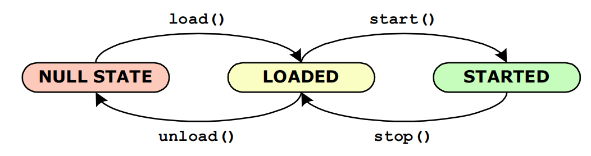
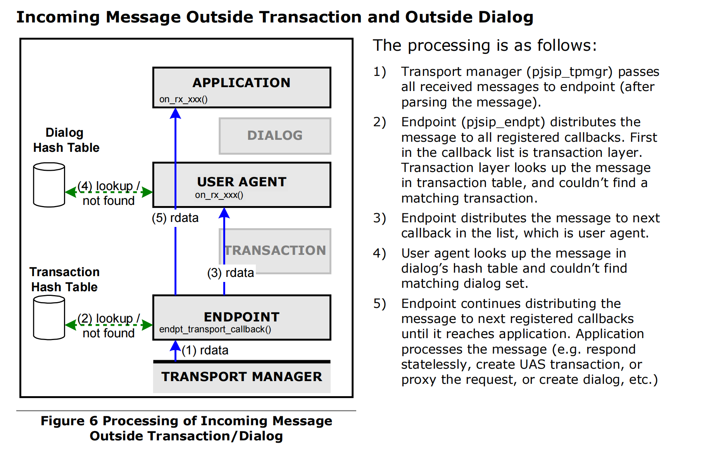
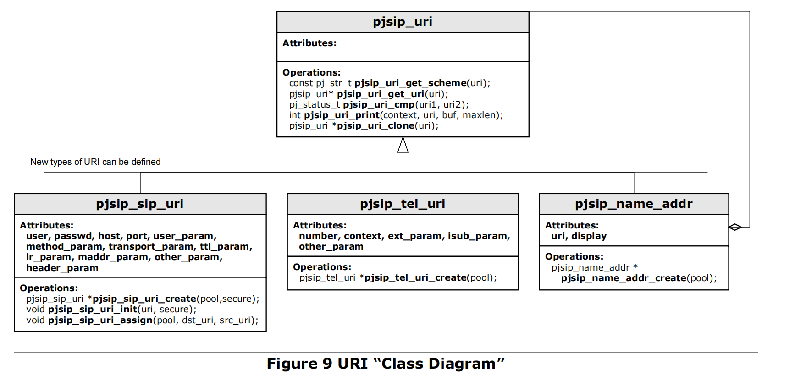
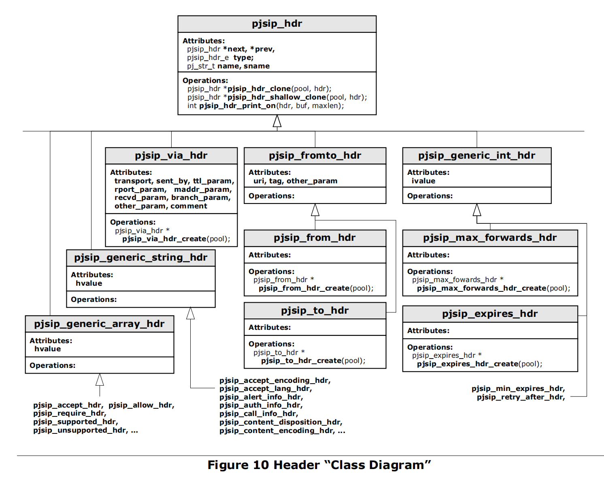
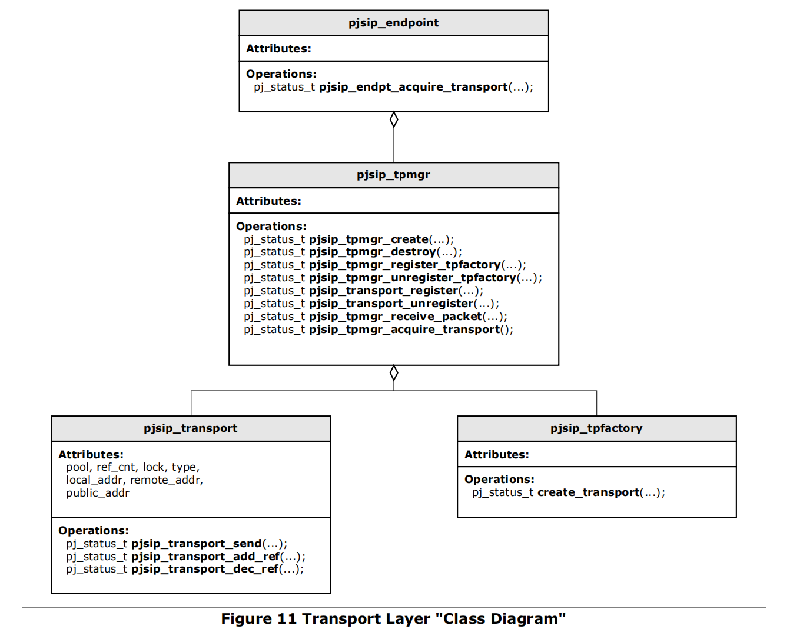
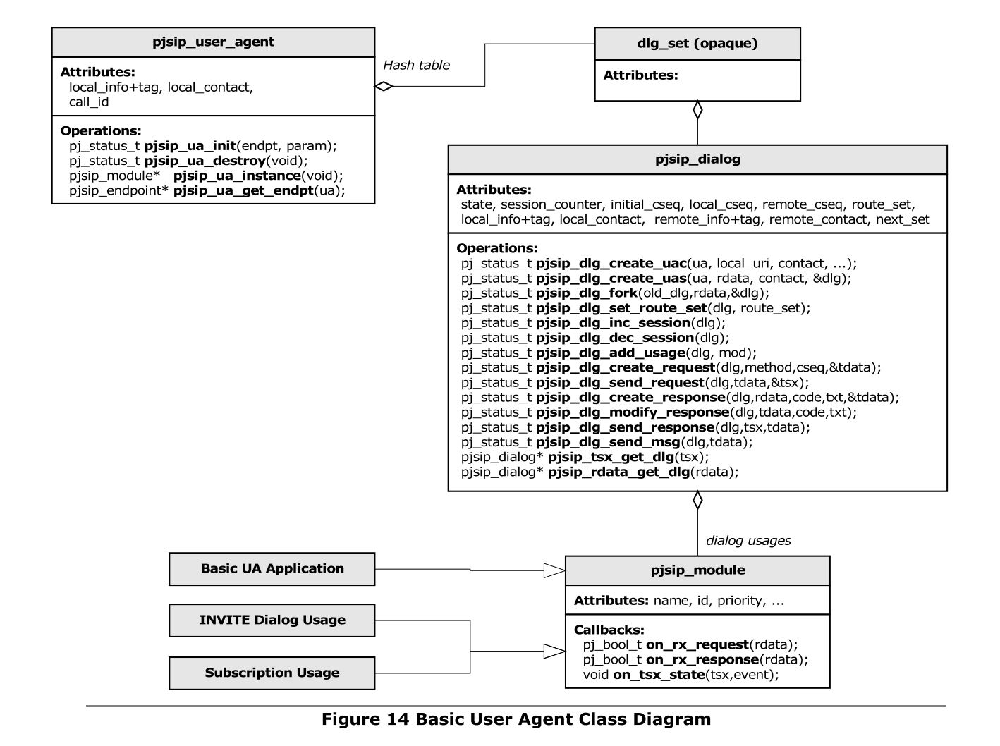
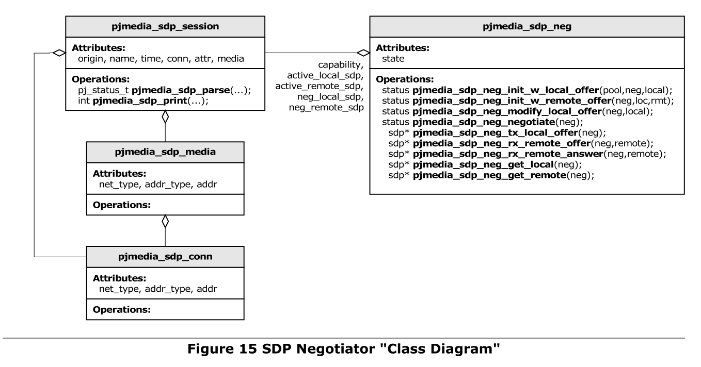
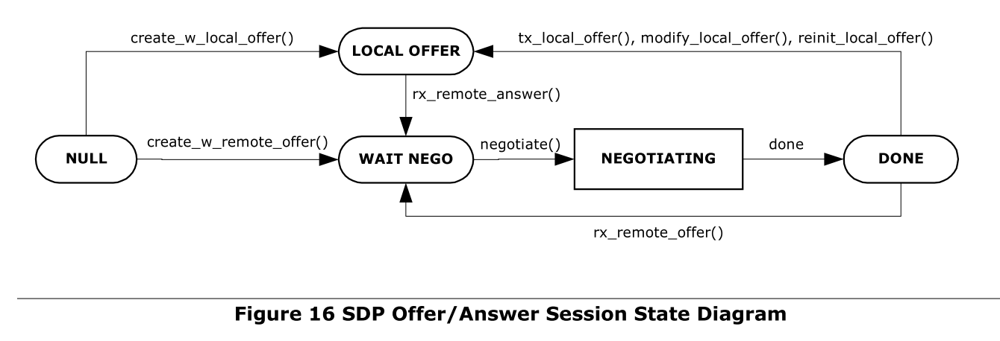
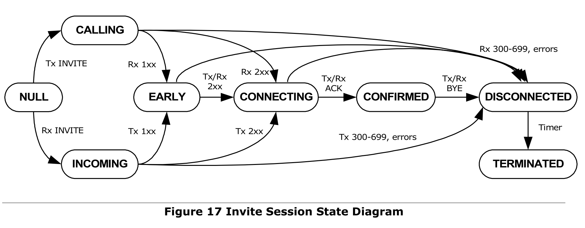
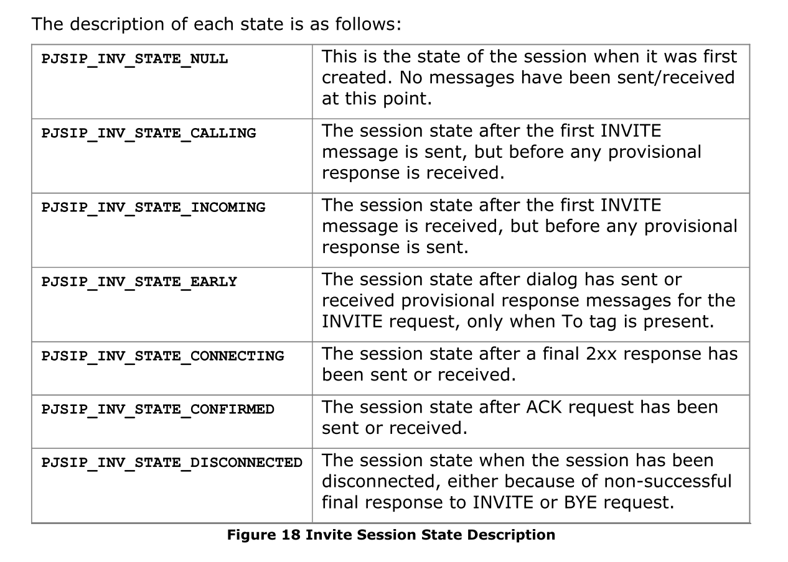

总体


The Endpoint
数据结构
pjsip_endpoint
功能
1、pool factory
All memory allocations for the SIP components
- pjsip_endpt_create_pool(),
- pjsip_endpt_release_pool().
When the endpoint is created (pjsip_endpt_create()), application MUST specify
the pool factory that will be used by the endpoint. Endpoint keeps this pool
factory pointer throughout its lifetime, and will use this to create and release
memory pools. 创建之前必须指定pool factory
2、Timer Management
a single timer heap instance to manage timerss, and all timer creation and scheduling by all SIP components will be done via the endpoint.
-
pjsip_endpt_schedule_timer(),
-
pjsip_endpt_cancel_timer().
3、Transport manager instance
The transport manager has SIP transports and controls message parsing and printing.
4、Single instance of PJLIB’s ioqueue
5、Thread safe polling function
application’s threads can poll for timer and socket events
-
(pjsip_endpt_handle_events()
check the occurrence of timer and network events
6、Manages PJSIP modules
7、Receives incoming SIP messages
It receives incoming SIP messages from transport manager and distributes the message to modules.
Module
数据结构
pjsip_module
/**
* @defgroup PJSIP_MOD Modules
* @ingroup PJSIP_CORE_CORE
* @brief Modules are the primary means to extend PJSIP!
* @{
* Modules are the primary means to extend PJSIP. Without modules, PJSIP
* would not know how to handle messages, and will simply discard all
* incoming messages.
*
* Modules are registered by creating and initializing #pjsip_module
* structure, and register the structure to PJSIP with
* #pjsip_endpt_register_module().
*
* The <A HREF="/en/latest/api/pjsip/guide.html">PJSIP Developer's Guide</A>
* has a thorough discussion on this subject, and readers are encouraged
* to read the document for more information.
*/
/**
* The declaration for SIP module. This structure would be passed to
* #pjsip_endpt_register_module() to register the module to PJSIP.
*/
struct pjsip_module
{
/** To allow chaining of modules in the endpoint. */
PJ_DECL_LIST_MEMBER(struct pjsip_module);
/**
* Module name to identify the module.
*
* This field MUST be initialized before registering the module.
*/
pj_str_t name;
/**
* Module ID. Application must initialize this field with -1 before
* registering the module to PJSIP. After the module is registered,
* this field will contain a unique ID to identify the module.
*/
int id;
/**
* Integer number to identify module initialization and start order with
* regard to other modules. Higher number will make the module gets
* initialized later.
*
* This field MUST be initialized before registering the module.
*/
int priority;
/**
* Optional function to be called to initialize the module. This function
* will be called by endpoint during module registration. If the value
* is NULL, then it's equal to returning PJ_SUCCESS.
*
* @param endpt The endpoint instance.
* @return Module should return PJ_SUCCESS to indicate success.
*/
pj_status_t (*load)(pjsip_endpoint *endpt);
/**
* Optional function to be called to start the module. This function
* will be called by endpoint during module registration. If the value
* is NULL, then it's equal to returning PJ_SUCCESS.
*
* @return Module should return zero to indicate success.
*/
pj_status_t (*start)(void);
/**
* Optional function to be called to deinitialize the module before
* it is unloaded. This function will be called by endpoint during
* module unregistration. If the value is NULL, then it's equal to
* returning PJ_SUCCESS.
*
* @return Module should return PJ_SUCCESS to indicate success.
*/
pj_status_t (*stop)(void);
/**
* Optional function to be called to deinitialize the module before
* it is unloaded. This function will be called by endpoint during
* module unregistration. If the value is NULL, then it's equal to
* returning PJ_SUCCESS.
*
* @param mod The module.
*
* @return Module should return PJ_SUCCESS to indicate success.
*/
pj_status_t (*unload)(void);
/**
* Optional function to be called to process incoming request message.
*
* @param rdata The incoming message.
*
* @return Module should return PJ_TRUE if it handles the request,
* or otherwise it should return PJ_FALSE to allow other
* modules to handle the request.
*/
pj_bool_t (*on_rx_request)(pjsip_rx_data *rdata);
/**
* Optional function to be called to process incoming response message.
*
* @param rdata The incoming message.
*
* @return Module should return PJ_TRUE if it handles the
* response, or otherwise it should return PJ_FALSE to
* allow other modules to handle the response.
*/
pj_bool_t (*on_rx_response)(pjsip_rx_data *rdata);
/**
* Optional function to be called when transport layer is about to
* transmit outgoing request message.
*
* @param tdata The outgoing request message.
*
* @return Module should return PJ_SUCCESS in all cases.
* If non-zero is returned, the message
* will not be sent.
*/
pj_status_t (*on_tx_request)(pjsip_tx_data *tdata);
/**
* Optional function to be called when transport layer is about to
* transmit outgoing response message.
*
* @param tdata The outgoing response message.
*
* @return Module should return PJ_SUCCESS in all cases.
* If non-zero is returned, the message
* will not be sent.
*/
pj_status_t (*on_tx_response)(pjsip_tx_data *tdata);
/**
* Optional function to be called when this module is acting as
* transaction user for the specified transaction, when the
* transaction's state has changed.
*
* @param tsx The transaction.
* @param event The event which has caused the transaction state
* to change.
*/
void (*on_tsx_state)(pjsip_transaction *tsx, pjsip_event *event);
};
概述
For incoming messages, the endpoint (pjsip_endpoint) distributes the message to all modules starting from module with highest priority, until one of them says that it has processed the message. For outgoing messages, the endpoint distributes the outgoing messages before they are transmitted to the wire, to allow modules to put last modification on the message if they wish.
API
endpoint调用改变模块调用：The four function pointers load, start, stop, and unload are called by endpoint to control the module state.
pjsip_endpt_register_module() register the module to PJSIP endpoint
on_rx_request() and on_rx_response() : endpoint按照优先级从高到低发给模块，调用这两个函数，返回值不为0，表示模块处理了，停止发送
- module to receive SIP messages from endpoint (pjsip_endpt) or from other modules.
- The return value of these callbacks is important. If a callback has returned non-zero (i.e. true condition), it semantically means that the module has taken care the message; in this case, the endpoint will stop distributing the message to other modules.
on_tx_request() and on_tx_response()
- function pointers are called by transport manager before a message is transmitted.
- This gives an opportunity for some types of modules (e.g. sigcomp, message signing) chance to make last modification to the message before transmitt.
- All modules MUST return PJ_SUCCESS (i.e. zero status), or otherwise the transmission will be cancelled.
on_tsx_state()
receive notification every time a transaction state has changed, which can be caused by receipt of message, transmission of message, timer events, or transport error event. 每次事务状态发生变化时接收通知，这种变化可能是由消息的接收、消息的传输、计时器事件或传输错误事件引起的。
2.1.2 Module Priorities
Module priority specifies the order of which modules are called first to process the callback. Module with higher priority (i.e. lower priority number) will have their on_rx_request() and on_rx_response() called first, and on_tx_request() and on_tx_response() called last.
/**
* Module priority guidelines.
*/
enum pjsip_module_priority
{
/**
* This is the priority used by transport layer.
*/
PJSIP_MOD_PRIORITY_TRANSPORT_LAYER = 8,
/**
* This is the priority used by transaction layer.
*/
PJSIP_MOD_PRIORITY_TSX_LAYER = 16,
/**
* This is the priority used by the user agent and proxy layer.
*/
PJSIP_MOD_PRIORITY_UA_PROXY_LAYER = 32,
/**
* This is the priority used by the dialog usages.
*/
PJSIP_MOD_PRIORITY_DIALOG_USAGE = 48,
/**
* This is the recommended priority to be used by applications.
*/
PJSIP_MOD_PRIORITY_APPLICATION = 64
};
PJSIP_MOD_PRIORITY_TRANSPORT_LAYER
- transport manager 的优先级
- 低于这个的优先级，可以在transport layer之前调用on_tx_request()/on_tx_response() ；高于这个优先级，可以在transport layer处理完后继续处理
- This priority currently is only used to control message transmission, i.e. module with lower priority than this (that means higher priority number!) will have the on_tx_request()/on_tx_response() called before the message is processed by transport layer (e.g. destination is calculated, message is printed to contiguous buffer), while module with higher priority than this will have the callback called after the message has been processed by transport layer.
PJSIP_MOD_PRIORITY_TSX_LAYER
-
transaction layer优先级
-
The transaction layer absorbs all incoming messages that belong to a transaction.
PJSIP_MOD_PRIORITY_UA_PROXY_LAYER
- priority used by UA layer (i.e.dialog framework) or proxy layer.
- The UA layer absorbs all incoming messages that belong to a dialog set (this means forked responses as well).
PJSIP_MOD_PRIORITY_DIALOG_USAGE
- for dialog usages.
- Currently PJSIP implements two types of dialog usages: invite sesssion and event subscriptionsession (including REFER subscription). The dialog usage absorbs messages inside a dialog that belong to particular session.
PJSIP_MOD_PRIORITY_APPLICATION
- for typical application modules, when they want to utilize transactions, dialogs, and dialog usages.
2.1.3 Incoming Message Processing by Modules
- incoming message arrives, it is represented as receive message buffer (struct pjsip_rx_data, see section 5.1 “Receive Data Buffer”).
- Transport manager parses the message, put the parsed data structures in the receive message buffer
- pass the message to the endpoint.
- The endpoint distributes the receive message buffer to each registered module by calling on_rx_request() or on_rx_response() callback, starting from module with highest priority (i.e. lowest priority number) until one of them returns non-zero. When one of the module has returned non-zero, endpoint stops distributing the message to the remaining of the modules, because it assumes that the module has taken care about the processing of the message.
- The module which returns non-zero on the callback itself may further distribute the message to other modules. i.e
2.1.4 Outgoing Message Processing by Modules
-
An outgoing request or response message is represented by a transmit data buffer (pjsip_tx_data), which among other things, contains the message structure itself, memory pool, contiguous buffer, and transport info.
-
When pjsip_transport_send() is called to send a message, transport manager calls on_tx_request() or on_tx_response() for all modules, starting with modules with lowest priority (i.e. highest priority number).
-
When these callbacks are called, the message may have or have not been processed by the transport layer. The transport layer is responsible for managing these information inside a transmit buffer:
-
transport info, and
-
printing the message structure to contiguous buffer.
If modules want to modify the message structure before it is printed to buffer, then it must set its priority number higher than transport layer priority. If modules want to see the actual packet bytes as they are transmitted to the wire (e.g. for logging purpose), then it should set its priority number to lower than transport layer.
-
2.1.5 Transaction User and State Callback
-
transaction 状态变化，接收notification from a particular transaction
-
This callback is unique because transaction state may change because of non message related events (e.g. timer timeout and transport error).
-
This callback will only be called after the module has been registered as transaction user for a particular transaction. Only one transaction user is allowed per transaction. Transaction user can be set to transaction on per transaction basis.
For transactions created within a dialog, the transaction user is set to the UA layer module on behalf of a particular dialog. When applications creates the transaction manually, they may set themselves as the transaction user.
2.1.6 Module Specific Data
mod_data container：modules can put module specific data in that component
The mod_data array is indexed by module ID
Application can retrieve the value calling pjsip_rdata_get_tsx() or pjsip_rdata_get_dlg(),
2.2.1 Module Management API
pj_status_t pjsip_endpt_register_module( pjsip_endpoint *endpt,
pjsip_module *module );
Register a module to the endpoint. The endpoint will then call the load and start function in the module to properly initialize the module, and assign a unique module ID for the module.
pj_status_t pjsip_endpt_unregister_module( pjsip_endpoint *endpt,
pjsip_module *module );
Unregister a module from the endpoint. The endpoint will then call the stop and unload function in the module to properly shutdown the module.
2.2.2 Module Capabilities
Currently the endpoint manages these capabilities
- allowed SIP methods (Allow header field),
- supported SIP extensions (Supported header field).
- supported content type (Accept header field).
These header fields will be added to outgoing requests or responses automatically, where appropriate.
A module declares new capability by calling pjsip_endpt_add_capability() function.
Message Elements
3.1 Uniform Resource Indicator (URI)

3.1.2 URI Context
URI context 指明哪里使用URI，指明什么元素可以出现在context
/**
* URI context.
*/
typedef enum pjsip_uri_context_e
{
PJSIP_URI_IN_REQ_URI, /**< The URI is in Request URI. */
PJSIP_URI_IN_FROMTO_HDR, /**< The URI is in From/To header. */
PJSIP_URI_IN_CONTACT_HDR, /**< The URI is in Contact header. */
PJSIP_URI_IN_ROUTING_HDR, /**< The URI is in Route/Record-Route header. */
PJSIP_URI_IN_OTHER /**< Other context (web page, business card, etc.) */
} pjsip_uri_context_e;
3.1.3 Base URI
struct pjsip_uri
{
pjsip_uri_vptr *vptr;
};
pjsip_uri_vptr 虚函数表，由各类url自行定义
/**
* URI 'virtual' function table.
* All types of URI in this library (such as sip:, sips:, tel:, and name-addr)
* will have pointer to this table as their first struct member. This table
* provides polimorphic behaviour to the URI.
*/
typedef struct pjsip_uri_vptr
{
/**
* Get URI scheme.
* @param uri the URI (self).
* @return the URI scheme.
*/
const pj_str_t* (*p_get_scheme)(const void *uri);
/**
* Get the URI object contained by this URI, or the URI itself if
* it doesn't contain another URI.
* @param uri the URI (self).
*/
void* (*p_get_uri)(void *uri);
/**
* Print URI components to the buffer, following the rule of which
* components are allowed for the context.
* @param context the context where the URI will be placed.
* @param uri the URI (self).
* @param buf the buffer.
* @param size the size of the buffer.
* @return the length printed.
*/
pj_ssize_t (*p_print)(pjsip_uri_context_e context,
const void *uri,
char *buf, pj_size_t size);
/**
* Compare two URIs according to the context.
* @param context the context.
* @param uri1 the first URI (self).
* @param uri2 the second URI.
* @return PJ_SUCCESS if equal, or otherwise the error status which
* should point to the mismatch part.
*/
pj_status_t (*p_compare)(pjsip_uri_context_e context,
const void *uri1, const void *uri2);
/**
* Clone URI.
* @param pool the pool.
* @param the URI to clone (self).
* @return new URI.
*/
void *(*p_clone)(pj_pool_t *pool, const void *uri);
} pjsip_uri_vptr;
以下的一些函数可以应用在所有类型的url上作为pjsip_uri_vptr虚函数表的初始化
const pj_str_t\* pjsip_uri_get_scheme( const pjsip_uri \*uri );
Get the URI scheme string (e.g. “sip”, “sips”, “tel”, etc.).
pjsip_uri\* pjsip_uri_get_uri( pjsip_uri \*uri );
Get the URI object. Normally all URI objects will return itself except name address which will return the URI inside the name address object.
pj_status_t pjsip_uri_cmp( pjsip_uri_context_e context,
const pjsip_uri \*uri1,
const pjsip_uri \*uri2);
Compare uri1 and uri2 according to the specified context. Parameters which are not allowed to appear in the specified context will be ignored in the comparison. It will return PJ_SUCCESS is both URIs are equal.
int pjsip_uri_print(
pjsip_uri_context_e context,
const pjsip_uri \*uri,
char \*buffer,
pj_size_t max_size);
Print uri to the specified buffer according to the specified context. Parameters which are not allowed to appear in the specified context will not be included in the printing.
pjsip_uri* pjsip_uri_clone( pj_pool_t *pool, const pjsip_uri *uri );
Create a deep clone of uri using the specified pool.
3.1.4 SIP and SIPS URI
/**
* @}
*/
/**
* @defgroup PJSIP_SIP_URI SIP URI Scheme and Name address
* @ingroup PJSIP_URI
* @brief SIP URL structure ("sip:" and "sips:")
* @{
*/
/**
* SIP and SIPS URL scheme.
*/
typedef struct pjsip_sip_uri
{
pjsip_uri_vptr *vptr; /**< Pointer to virtual function table.*/
pj_str_t user; /**< Optional user part. */
pj_str_t passwd; /**< Optional password part. */
pj_str_t host; /**< Host part, always exists. */
int port; /**< Optional port number, or zero. */
pj_str_t user_param; /**< Optional user parameter */
pj_str_t method_param; /**< Optional method parameter. */
pj_str_t transport_param; /**< Optional transport parameter. */
int ttl_param; /**< Optional TTL param, or -1. */
int lr_param; /**< Optional loose routing param, or zero */
pj_str_t maddr_param; /**< Optional maddr param */
pjsip_param other_param; /**< Other parameters grouped together. */
pjsip_param header_param; /**< Optional header parameter. */
} pjsip_sip_uri;
SIP and SIPS URI类型URL 特有函数
pjsip_sip_uri* pjsip_sip_uri_create( pj_pool_t *pool, pj_bool_t secure );
Create a new SIP URL using the specified pool. If the secure flag is set to non-zero, then SIPS URL will be created. This function will set vptr member of the URL to SIP or SIPS vptr and set all other members to blank value.
void pjsip_sip_uri_init( pjsip_sip_uri \*url, pj_bool_t secure );
Initialize a SIP URL structure.
void pjsip_sip_uri_assign( pj_pool_t \*pool,
pjsip_sip_uri \*url,
const pjsip_sip_uri \*rhs );
Perform deep copy of rhs to url.
3.1.5 Tel URI
pjsip_tel_uri\* pjsip_tel_uri_create( pj_pool_t \*pool );
Create a new tel: URI.
int pjsip_tel_nb_cmp( const pj_str_t \*nb1, const pj_str_t \*nb2 );
This utility function compares two telephone numbers for equality, according to rules specified in RFC 3966 (about tel: URI). It recognizes global and local numbers, and it ignores visual separators during the comparison.
3.1.6 Name Address
/**
* SIP name-addr, which typically appear in From, To, and Contact header.
* The SIP name-addr contains a generic URI and a display name.
*/
typedef struct pjsip_name_addr
{
/** Pointer to virtual function table. */
pjsip_uri_vptr *vptr;
/** Optional display name. */
pj_str_t display;
/** URI part. */
pjsip_uri *uri;
} pjsip_name_addr;
pjsip_name_addr\* pjsip_name_addr_create( pj_pool_t \*pool );
Create a new name address. This will set initialize the virtual function table pointer, set blank display name and set the uri member to NULL.
void pjsip_name_addr_assign( pj_pool_t \*pool,
pjsip_name_addr \*name_addr,
const pjsip_name_addr \*rhs );
Copy rhs to name_addr.
3.2 SIP Methods
3.2.1 SIP Method Representation (pjsip_method)
/**
* This structure represents a SIP method.
* Application must always use either #pjsip_method_init or #pjsip_method_set
* to make sure that method name is initialized correctly. This way, the name
* member will always contain a valid method string regardless whether the ID
* is recognized or not.
*/
struct pjsip_method
{
pjsip_method_e id; /**< Method ID, from \a pjsip_method_e. */
pj_str_t name; /**< Method name, which will always contain the
method string. */
};
-
可扩展
-
对于sip协议定义的头在id字段，填入以下枚举类型
/** * This enumeration declares SIP methods as described by RFC3261. Additional * methods do exist, and they are described by corresponding RFCs for the SIP * extentensions. Since they won't alter the characteristic of the processing * of the message, they don't need to be explicitly mentioned here. */ typedef enum pjsip_method_e { PJSIP_INVITE_METHOD, /**< INVITE method, for establishing dialogs. */ PJSIP_CANCEL_METHOD, /**< CANCEL method, for cancelling request. */ PJSIP_ACK_METHOD, /**< ACK method. */ PJSIP_BYE_METHOD, /**< BYE method, for terminating dialog. */ PJSIP_REGISTER_METHOD, /**< REGISTER method. */ PJSIP_OPTIONS_METHOD, /**< OPTIONS method. */ PJSIP_OTHER_METHOD /**< Other method. */ } pjsip_method_e;
3.2.2 SIP Method API
void pjsip_method_init(
pjsip_method \*method, pj_pool_t \*pool,
const pj_str_t \*method_name );
Initialize method from string. This will initialize the id of the method field to the correct value.
void pjsip_method_init_np( pjsip_method \*method,
pj_str_t \*method_name );
Initialize method from method_name string without duplicating the string (np stands for no pool). The id field will be initialize accordingly.
void pjsip_method_set( pjsip_method \*method,
pjsip_method_id_e method_id );
Initialize method from the method ID enumeration. The name field will be initialized accordingly.
void pjsip_method_copy(
pj_pool_t \*pool,
pjsip_method \*method,
const pjsip_method \*rhs );
Copy rhs to method.
int pjsip_method_cmp(
const pjsip_method \*method1,
const pjsip_method \*method2 );
Compare method1 to method2 for equality. This function returns zero if both methods are equal, and (-1) or (+1) if method1 is less or greater than method2 respectively.
3.3 Header Fields
3.3.1 Header “Class Diagram”
3.3.2 Header Structure
所有类型header共有的属性 **PJSIP_DECL_HDR_MEMBER(hdr)**宏保证共有属性
/**
* Generic fields for all SIP headers are declared using this macro, to make
* sure that all headers will have exactly the same layout in their start of
* the storage. This behaves like C++ inheritance actually.
*/
#define PJSIP_DECL_HDR_MEMBER(hdr) \
/** List members. */ \
PJ_DECL_LIST_MEMBER(hdr); \
/** Header type */ \
pjsip_hdr_e type; \
/** Header name. */ \
pj_str_t name; \
/** Header short name version. */ \
pj_str_t sname; \
/** Virtual function table. */ \
pjsip_hdr_vptr *vptr
base header
/**
* Generic SIP header structure, for generic manipulation for headers in the
* message. All header fields can be typecasted to this type.
*/
struct pjsip_hdr
{
PJSIP_DECL_HDR_MEMBER(struct pjsip_hdr);
};
pjsip_hdr_vptr通用虚函数表
/**
* This structure provides the pointer to basic functions that are needed
* for generic header operations. All header fields will have pointer to
* this structure, so that they can be manipulated uniformly.
*/
typedef struct pjsip_hdr_vptr
{
/**
* Function to clone the header.
*
* @param pool Memory pool to allocate the new header.
* @param hdr Header to clone.
*
* @return A new instance of the header.
*/
void *(*clone)(pj_pool_t *pool, const void *hdr);
/**
* Pointer to function to shallow clone the header.
* Shallow cloning will just make a memory copy of the original header,
* thus all pointers in original header will be kept intact. Because the
* function does not need to perform deep copy, the operation should be
* faster, but the application must make sure that the original header
* is still valid throughout the lifetime of new header.
*
* @param pool Memory pool to allocate the new header.
* @param hdr The header to clone.
*/
void *(*shallow_clone)(pj_pool_t *pool, const void *hdr);
/** Pointer to function to print the header to the specified buffer.
* Returns the length of string written, or -1 if the remaining buffer
* is not enough to hold the header.
*
* @param hdr The header to print.
* @param buf The buffer.
* @param len The size of the buffer.
*
* @return The size copied to buffer, or -1 if there's not enough space.
*/
int (*print_on)(void *hdr, char *buf, pj_size_t len);
} pjsip_hdr_vptr;
以下的一些函数可以应用在所有类型的header上作为pjsip_hdr_vptr虚函数表的初始化
pjsip_hdr *pjsip_hdr_clone( pj_pool_t *pool, const pjsip_hdr *hdr );
Perform deep clone of hdr header.
pjsip_hdr *pjsip_hdr_shallow_clone( pj_pool_t *pool, const pjsip_hdr *hdr );
Perform shallow clone of hdr header. A shallow cloning creates a new exact copy of the specified header field, however most of its value will still point to the values in the original header. Normally shallow clone is just a simple memcpy() from the original header to a new header, therefore it’s expected that this operation is faster than deep cloning. However, care must be taken when shallow cloning headers. It must be understood that the new header still shares common pointers to the values in the old header. Therefore, when the pool containing the original header is destroyed, the new header will be rendered invalid too although the new header was shallow-cloned using different memory pool. Or if some values in the original header was modified, then the corresponding values in the shallow-cloned header will be modified too.Despite of this, shallow cloning is used widely in the library. For example, a dialog has some headers which values are more or less persistent during the session (e.g. From, To, Call-Id, Route, and Contact). When creating a request, the dialog can just shallow-clone these headers (instead of performing full cloning) and put them in the request message.
int pjsip_hdr_print_on( pjsip_hdr *hdr, char *buf, pj_size_t max_size);
Print the specified header to a buffer (e.g. before transmission). This function returns the number of bytes printed to the buffer, or –1 when the buffer is overflow.
3.3.4 Supported Header Fields
-
标准头部在The “standard” PJSIP header fields are declared in <pjsip/sip_msg.h>.
-
Other header fields may be declared in header files that implement specific functionalities or SIP extensions (e.g. headers used by SIMPLE extension, etc.).
-
创建头部The APIs to create individual header fields are by convention named after the header field name and followed by _create() suffix. For example, call function pjsip_via_hdr_create() to create an instance of pjsip_via_hdr header.
3.3.5 Header Array Elements
群组sip消息，拆分处理
When the parser encounters such arrays in headers, it will split the array into individual headers while maintaining their order of appearance.
**3.4 Message Body (pjsip_msg_body)**消息体本身
数据、类型、长度
/**
* @addtogroup PJSIP_MSG_BODY Message Body
* @brief SIP message body structures and manipulation.
* @ingroup PJSIP_MSG
* @{
*/
/**
* Generic abstraction to message body.
* When an incoming message is parsed (pjsip_parse_msg()), the parser fills in
* all members with the appropriate value. The 'data' and 'len' member will
* describe portion of incoming packet which denotes the message body.
* When application needs to attach message body to outgoing SIP message, it
* must fill in all members of this structure.
*/
struct pjsip_msg_body
{
/** MIME content type.
* For incoming messages, the parser will fill in this member with the
* content type found in Content-Type header.
*
* For outgoing messages, application may fill in this member with
* appropriate value, because the stack will generate Content-Type header
* based on the value specified here.
*
* If the content_type is empty, no Content-Type AND Content-Length header
* will be added to the message. The stack assumes that application adds
* these headers themselves.
*/
pjsip_media_type content_type;
/** Pointer to buffer which holds the message body data.
* For incoming messages, the parser will fill in this member with the
* pointer to the body string.
*
* When sending outgoing message, this member doesn't need to point to the
* actual message body string. It can be assigned with arbitrary pointer,
* because the value will only need to be understood by the print_body()
* function. The stack itself will not try to interpret this value, but
* instead will always call the print_body() whenever it needs to get the
* actual body string.
*/
void *data;
/** The length of the data.
* For incoming messages, the parser will fill in this member with the
* actual length of message body.
*
* When sending outgoing message, again just like the "data" member, the
* "len" member doesn't need to point to the actual length of the body
* string.
*/
unsigned len;
/** Pointer to function to print this message body.
* Application must set a proper function here when sending outgoing
* message.
*
* @param msg_body This structure itself.
* @param buf The buffer.
* @param size The buffer size.
*
* @return The length of the string printed, or -1 if there is
* not enough space in the buffer to print the whole
* message body.
*/
int (*print_body)(struct pjsip_msg_body *msg_body,
char *buf, pj_size_t size);
/** Clone the data part only of this message body. Note that this only
* duplicates the data part of the body instead of the whole message
* body. If application wants to duplicate the entire message body
* structure, it must call #pjsip_msg_body_clone().
*
* @param pool Pool used to clone the data.
* @param data The data inside message body, to be cloned.
* @param len The length of the data.
*
* @return New data duplicated from the original data.
*/
void* (*clone_data)(pj_pool_t *pool, const void *data, unsigned len);
};
pj_status_t pjsip_msg_body_clone( pj_pool_t \*pool,
pjsip_msg_body \*dst_body,
const pjsip_msg_body \*src_body);
Clone the message body in src_body to the dst_body. This will duplicate the contents of the message body using the clone_data member of the source message body.
3.5 Message (pjsip_msg)
/* **************************************************************************/
/**
* @defgroup PJSIP_MSG_MSG Message Structure
* @brief SIP message (request and response) structure and operations.
* @ingroup PJSIP_MSG
* @{
*/
/**
* Message type (request or response).
*/
typedef enum pjsip_msg_type_e
{
PJSIP_REQUEST_MSG, /**< Indicates request message. */
PJSIP_RESPONSE_MSG /**< Indicates response message. */
} pjsip_msg_type_e;
/**
* This structure describes a SIP message.
*/
struct pjsip_msg
{
/** Message type (ie request or response). */
pjsip_msg_type_e type;
/** The first line of the message can be either request line for request
* messages, or status line for response messages. It is represented here
* as a union.
*/
union
{
/** Request Line. */
struct pjsip_request_line req;
/** Status Line. */
struct pjsip_status_line status;
} line;
/** List of message headers. */
pjsip_hdr hdr;
/** Pointer to message body, or NULL if no message body is attached to
* this mesage.
*/
pjsip_msg_body *body;
};
- request and response message in PJSIP are represented with pjsip_msg
/**
* Create new request or response message.
*
* @param pool The pool.
* @param type Message type.
* @return New message, or THROW exception if failed.
*/
PJ_DECL(pjsip_msg*) pjsip_msg_create( pj_pool_t *pool, pjsip_msg_type_e type);
/**
* Perform a deep clone of a SIP message.
*
* @param pool The pool for creating the new message.
* @param msg The message to be duplicated.
*
* @return New message, which is duplicated from the original
* message.
*/
PJ_DECL(pjsip_msg*) pjsip_msg_clone( pj_pool_t *pool, const pjsip_msg *msg);
/**
* Find a header in the message by the header type.
*
* @param msg The message.
* @param type The header type to find.
* @param start The first header field where the search should begin.
* If NULL is specified, then the search will begin from the
* first header, otherwise the search will begin at the
* specified header.
*
* @return The header field, or NULL if no header with the specified
* type is found.
*/
PJ_DECL(void*) pjsip_msg_find_hdr( const pjsip_msg *msg,
pjsip_hdr_e type, const void *start);
/**
* Find a header in the message by its name.
*
* @param msg The message.
* @param name The header name to find.
* @param start The first header field where the search should begin.
* If NULL is specified, then the search will begin from the
* first header, otherwise the search will begin at the
* specified header.
*
* @return The header field, or NULL if no header with the specified
* type is found.
*/
PJ_DECL(void*) pjsip_msg_find_hdr_by_name( const pjsip_msg *msg,
const pj_str_t *name,
const void *start);
/**
* Find a header in the message by its name and short name version.
*
* @param msg The message.
* @param name The header name to find.
* @param sname The short name version of the header name.
* @param start The first header field where the search should begin.
* If NULL is specified, then the search will begin from the
* first header, otherwise the search will begin at the
* specified header.
*
* @return The header field, or NULL if no header with the specified
* type is found.
*/
PJ_DECL(void*) pjsip_msg_find_hdr_by_names(const pjsip_msg *msg,
const pj_str_t *name,
const pj_str_t *sname,
const void *start);
/**
* Find and remove a header in the message.
*
* @param msg The message.
* @param hdr The header type to find.
* @param start The first header field where the search should begin,
* or NULL to search from the first header in the message.
*
* @return The header field, or NULL if not found.
*/
PJ_DECL(void*) pjsip_msg_find_remove_hdr( pjsip_msg *msg,
pjsip_hdr_e hdr, void *start);
/**
* Add a header to the message, putting it last in the header list.
*
* @param msg The message.
* @param hdr The header to add.
*
* @bug Once the header is put in a list (or message), it can not be put in
* other list (or message). Otherwise Real Bad Thing will happen.
*/
PJ_INLINE(void) pjsip_msg_add_hdr( pjsip_msg *msg, pjsip_hdr *hdr )
{
pj_list_insert_before(&msg->hdr, hdr);
}
/**
* Add header field to the message, putting it in the front of the header list.
*
* @param msg The message.
* @param hdr The header to add.
*
* @bug Once the header is put in a list (or message), it can not be put in
* other list (or message). Otherwise Real Bad Thing will happen.
*/
PJ_INLINE(void) pjsip_msg_insert_first_hdr( pjsip_msg *msg, pjsip_hdr *hdr )
{
pj_list_insert_after(&msg->hdr, hdr);
}
/**
* Print the message to the specified buffer.
*
* @param msg The message to print.
* @param buf The buffer
* @param size The size of the buffer.
*
* @return The length of the printed characters (in bytes), or NEGATIVE
* value if the message is too large for the specified buffer.
*/
PJ_DECL(pj_ssize_t) pjsip_msg_print(const pjsip_msg *msg,
char *buf, pj_size_t size);
3.6 SIP Status Codes
sip状态码
/**
* This enumeration lists standard SIP status codes according to RFC 3261.
* In addition, it also declares new status class 7xx for errors generated
* by the stack. This status class however should not get transmitted on the
* wire.
*/
typedef enum pjsip_status_code
{
PJSIP_SC_NULL = 0,
PJSIP_SC_TRYING = 100,
PJSIP_SC_RINGING = 180,
PJSIP_SC_CALL_BEING_FORWARDED = 181,
PJSIP_SC_QUEUED = 182,
PJSIP_SC_PROGRESS = 183,
PJSIP_SC_EARLY_DIALOG_TERMINATED = 199,
PJSIP_SC_OK = 200,
PJSIP_SC_ACCEPTED = 202,
PJSIP_SC_NO_NOTIFICATION = 204,
PJSIP_SC_MULTIPLE_CHOICES = 300,
PJSIP_SC_MOVED_PERMANENTLY = 301,
PJSIP_SC_MOVED_TEMPORARILY = 302,
PJSIP_SC_USE_PROXY = 305,
PJSIP_SC_ALTERNATIVE_SERVICE = 380,
PJSIP_SC_BAD_REQUEST = 400,
PJSIP_SC_UNAUTHORIZED = 401,
PJSIP_SC_PAYMENT_REQUIRED = 402,
PJSIP_SC_FORBIDDEN = 403,
PJSIP_SC_NOT_FOUND = 404,
PJSIP_SC_METHOD_NOT_ALLOWED = 405,
PJSIP_SC_NOT_ACCEPTABLE = 406,
PJSIP_SC_PROXY_AUTHENTICATION_REQUIRED = 407,
PJSIP_SC_REQUEST_TIMEOUT = 408,
PJSIP_SC_CONFLICT = 409,
PJSIP_SC_GONE = 410,
PJSIP_SC_LENGTH_REQUIRED = 411,
PJSIP_SC_CONDITIONAL_REQUEST_FAILED = 412,
PJSIP_SC_REQUEST_ENTITY_TOO_LARGE = 413,
PJSIP_SC_REQUEST_URI_TOO_LONG = 414,
PJSIP_SC_UNSUPPORTED_MEDIA_TYPE = 415,
PJSIP_SC_UNSUPPORTED_URI_SCHEME = 416,
PJSIP_SC_UNKNOWN_RESOURCE_PRIORITY = 417,
PJSIP_SC_BAD_EXTENSION = 420,
PJSIP_SC_EXTENSION_REQUIRED = 421,
PJSIP_SC_SESSION_TIMER_TOO_SMALL = 422,
PJSIP_SC_INTERVAL_TOO_BRIEF = 423,
PJSIP_SC_BAD_LOCATION_INFORMATION = 424,
PJSIP_SC_USE_IDENTITY_HEADER = 428,
PJSIP_SC_PROVIDE_REFERRER_HEADER = 429,
PJSIP_SC_FLOW_FAILED = 430,
PJSIP_SC_ANONIMITY_DISALLOWED = 433,
PJSIP_SC_BAD_IDENTITY_INFO = 436,
PJSIP_SC_UNSUPPORTED_CERTIFICATE = 437,
PJSIP_SC_INVALID_IDENTITY_HEADER = 438,
PJSIP_SC_FIRST_HOP_LACKS_OUTBOUND_SUPPORT = 439,
PJSIP_SC_MAX_BREADTH_EXCEEDED = 440,
PJSIP_SC_BAD_INFO_PACKAGE = 469,
PJSIP_SC_CONSENT_NEEDED = 470,
PJSIP_SC_TEMPORARILY_UNAVAILABLE = 480,
PJSIP_SC_CALL_TSX_DOES_NOT_EXIST = 481,
PJSIP_SC_LOOP_DETECTED = 482,
PJSIP_SC_TOO_MANY_HOPS = 483,
PJSIP_SC_ADDRESS_INCOMPLETE = 484,
PJSIP_AC_AMBIGUOUS = 485,
PJSIP_SC_BUSY_HERE = 486,
PJSIP_SC_REQUEST_TERMINATED = 487,
PJSIP_SC_NOT_ACCEPTABLE_HERE = 488,
PJSIP_SC_BAD_EVENT = 489,
PJSIP_SC_REQUEST_UPDATED = 490,
PJSIP_SC_REQUEST_PENDING = 491,
PJSIP_SC_UNDECIPHERABLE = 493,
PJSIP_SC_SECURITY_AGREEMENT_NEEDED = 494,
PJSIP_SC_INTERNAL_SERVER_ERROR = 500,
PJSIP_SC_NOT_IMPLEMENTED = 501,
PJSIP_SC_BAD_GATEWAY = 502,
PJSIP_SC_SERVICE_UNAVAILABLE = 503,
PJSIP_SC_SERVER_TIMEOUT = 504,
PJSIP_SC_VERSION_NOT_SUPPORTED = 505,
PJSIP_SC_MESSAGE_TOO_LARGE = 513,
PJSIP_SC_PUSH_NOTIFICATION_SERVICE_NOT_SUPPORTED = 555,
PJSIP_SC_PRECONDITION_FAILURE = 580,
PJSIP_SC_BUSY_EVERYWHERE = 600,
PJSIP_SC_DECLINE = 603,
PJSIP_SC_DOES_NOT_EXIST_ANYWHERE = 604,
PJSIP_SC_NOT_ACCEPTABLE_ANYWHERE = 606,
PJSIP_SC_UNWANTED = 607,
PJSIP_SC_REJECTED = 608,
PJSIP_SC_TSX_TIMEOUT = PJSIP_SC_REQUEST_TIMEOUT,
/*PJSIP_SC_TSX_RESOLVE_ERROR = 702,*/
PJSIP_SC_TSX_TRANSPORT_ERROR = PJSIP_SC_SERVICE_UNAVAILABLE,
/* This is not an actual status code, but rather a constant
* to force GCC to use 32bit to represent this enum, since
* we have a code in PJSUA-LIB that assigns an integer
* to this enum (see pjsua_acc_get_info() function).
*/
PJSIP_SC__force_32bit = 0x7FFFFFFF
} pjsip_status_code;
3.7 Non-Standard Parameter Elements
- 标准参数有特定字段“standard” parameters (e.g. URI parameters, header field parameters) will normally be represented as individual attributes/fields of the corresponding structure.
- 非标准参数在other_param中Parameters that are not “standard” will be put in a list of parameters, with each parameter is represented as pjsip_param structure. Non standard parameter normally is declared as other_param field in the owning structure.
/**
* Generic parameter, normally used in other_param or header_param.
*/
typedef struct pjsip_param
{
PJ_DECL_LIST_MEMBER(struct pjsip_param); /**< Generic list member. */
pj_str_t name; /**< Param/header name. */
pj_str_t value; /**< Param/header value. */
} pjsip_param;
相关函数
/**
* Find the specified parameter name in the list. The name will be compared
* in case-insensitive comparison.
*
* @param param_list List of parameters to find.
* @param name Parameter/header name to find.
*
* @return The parameter if found, or NULL.
*/
PJ_DECL(pjsip_param*) pjsip_param_find( const pjsip_param *param_list,
const pj_str_t *name );
/**
* Alias for pjsip_param_find()
*/
PJ_INLINE(pjsip_param*) pjsip_param_cfind(const pjsip_param *param_list,
const pj_str_t *name)
{
return pjsip_param_find(param_list, name);
}
/**
* Compare two parameter lists.
*
* @param param_list1 First parameter list.
* @param param_list2 Second parameter list.
* @param ig_nf If set to 1, do not compare parameters that only
* appear in one of the list.
*
* @return Zero if the parameter list are equal, non-zero
* otherwise.
*/
PJ_DECL(int) pjsip_param_cmp(const pjsip_param *param_list1,
const pjsip_param *param_list2,
pj_bool_t ig_nf);
/**
* Duplicate the parameters.
*
* @param pool Pool to allocate memory from.
* @param dst_list Destination list.
* @param src_list Source list.
*/
PJ_DECL(void) pjsip_param_clone(pj_pool_t *pool, pjsip_param *dst_list,
const pjsip_param *src_list);
/**
* Duplicate the parameters.
*
* @param pool Pool to allocate memory from.
* @param dst_list Destination list.
* @param src_list Source list.
*/
PJ_DECL(void) pjsip_param_shallow_clone(pj_pool_t *pool,
pjsip_param *dst_list,
const pjsip_param *src_list);
/**
* Print parameters.
*
* @param param_list The parameter list.
* @param buf Buffer.
* @param size Size of buffer.
* @param pname_unres Specification of allowed characters in pname.
* @param pvalue_unres Specification of allowed characters in pvalue.
* @param sep Separator character (either ';', ',', or '?').
* When separator is set to '?', this function will
* automatically adjust the separator character to
* '&' after the first parameter is printed.
*
* @return The number of bytes printed, or -1 on errr.
*/
PJ_DECL(pj_ssize_t) pjsip_param_print_on(const pjsip_param *param_list,
char *buf, pj_size_t size,
const pj_cis_t *pname_unres,
const pj_cis_t *pvalue_unres,
int sep);
Chapter 4:Parser
4.1 Features
- zero-copy for all message elements，only pointer and length
- uses PJLIB’s memory pool
- zero synchronization
- uses PJLIB’s try/catch exception framework
- top-down, handwritten parser
- It’s reentrant
- It’s extensible
4.2 Functions
4.2.1 Message Parsing
/**
* Parse a packet buffer and build a full SIP message from the packet. This
* function parses all parts of the message, including request/status line,
* all headers, and the message body. The message body however is only
* treated as a text block, ie. the function will not try to parse the content
* of the body.
*
* Note that the input string buffer MUST be NULL terminated and have
* length at least size+1 (size MUST NOT include the NULL terminator).
*
* @param pool The pool to allocate memory.
* @param buf The input buffer, which MUST be NULL terminated.
* @param size The length of the string (not counting NULL terminator).
* @param err_list If this parameter is not NULL, then the parser will
* put error messages during parsing in this list.
*
* @return The message or NULL when failed. No exception is thrown
* by this function (or any public parser functions).
*/
PJ_DECL(pjsip_msg *) pjsip_parse_msg( pj_pool_t *pool,
char *buf, pj_size_t size,
pjsip_parser_err_report *err_list);
/**
* Parse a packet buffer and build a rdata. The resulting message will be
* stored in \c msg field in the \c rdata. This behaves pretty much like
* #pjsip_parse_msg(), except that it will also initialize the header fields
* in the \c rdata.
*
* This function is normally called by the transport layer.
*
* Note that the input string buffer MUST be NULL terminated and have
* length at least size+1 (size MUST NOT include the NULL terminator).
*
* @param buf The input buffer, which MUST be NULL terminated.
* @param size The length of the string (not counting NULL terminator).
* @param rdata The receive data buffer to store the message and
* its elements.
*
* @return The message inside the rdata if successfull, or NULL.
*/
PJ_DECL(pjsip_msg *) pjsip_parse_rdata( char *buf, pj_size_t size,
pjsip_rx_data *rdata );
/**
* Check incoming packet to see if a (probably) valid SIP message has been
* received.
* Note that the input string buffer MUST be NULL terminated and have
* length at least size+1 (size MUST NOT include the NULL terminator).
*
* @param buf The input buffer, which must be NULL terminated.
* @param size The length of the string (not counting NULL terminator).
* @param is_datagram Put non-zero if transport is datagram oriented.
* @param msg_size [out] If message is valid, this parameter will contain
* the size of the SIP message (including body, if any).
*
* @return PJ_SUCCESS if a message is found, or an error code.
*/
PJ_DECL(pj_status_t) pjsip_find_msg(const char *buf,
pj_size_t size,
pj_bool_t is_datagram,
pj_size_t *msg_size);
4.2.2 URI Parsing
/**
* Parse an URI in the input and return the correct instance of URI.
* Note that the input string buffer MUST be NULL terminated and have
* length at least size+1 (size MUST NOT include the NULL terminator).
*
* @param pool The pool to get memory allocations.
* @param buf The input buffer, which MUST be NULL terminated.
* @param size The length of the string (not counting NULL terminator).
* @param options If no options are given (value is zero), the object
* returned is dependent on the syntax of the URI,
* eg. basic SIP URL, TEL URL, or name address.
* If option PJSIP_PARSE_URI_AS_NAMEADDR is given,
* then the returned object is always name address object,
* with the relevant URI object contained in the name
* address object.
* @return The URI or NULL when failed. No exception is thrown by
* this function (or any public parser functions).
*/
PJ_DECL(pjsip_uri*) pjsip_parse_uri( pj_pool_t *pool,
char *buf, pj_size_t size,
unsigned options);
4.2.3 Header Parsing
/**
* Parse the content of a header and return the header instance.
* This function parses the content of a header (ie. part after colon) according
* to the expected name, and will return the correct instance of header.
*
* Note that the input string buffer MUST be NULL terminated and have
* length at least size+1 (size MUST NOT include the NULL terminator).
*
* @param pool Pool to allocate memory for the header.
* @param hname Header name which is used to find the correct function
* to parse the header.
* @param line Header content, which must be NULL terminated.
* @param size The length of the string (not counting NULL terminator,
* if any).
* @param parsed_len If the value is not NULL, then upon return the function
* will fill the pointer with the length of the string
* that has been parsed. This is usefull for two purposes,
* one is when the string may contain more than one header
* lines, and two when an error happen the value can
* pinpoint the location of the error in the buffer.
*
* @return The instance of the header if parsing was successful,
* or otherwise a NULL pointer will be returned.
*/
PJ_DECL(void*) pjsip_parse_hdr( pj_pool_t *pool, const pj_str_t *hname,
char *line, pj_size_t size,
int *parsed_len);
/**
* Parse header line(s). Multiple headers can be parsed by this function.
* When there are multiple headers, the headers MUST be separated by either
* a newline (as in SIP message) or ampersand mark (as in URI). This separator
* is optional for the last header.
*
* Note that the input string buffer MUST be NULL terminated and have
* length at least size+1 (size MUST NOT include the NULL terminator).
*
* @param pool The pool.
* @param input The input text to parse, which must be NULL terminated.
* @param size The text length (not counting NULL terminator).
* @param hlist The header list to store the parsed headers.
* This list must have been initialized before calling
* this function.
* @param options Specify 1 here to make parsing stop when error is
* encountered when parsing the header. Otherwise the
* error is silently ignored and parsing resumes to the
* next line.
* @return zero if successfull, or -1 if error is encountered.
* Upon error, the \a hlist argument MAY contain
* successfully parsed headers.
*/
PJ_DECL(pj_status_t) pjsip_parse_headers( pj_pool_t *pool, char *input,
pj_size_t size, pjsip_hdr *hlist,
unsigned options);
pjsip_parse_headers是multiple
4.3 Extending Parser
Chapter 5:Message Buffers
5.1 Receive Data Buffer
5.1.1 Receive Data Buffer Structure
A SIP message received by PJSIP will be passed around to different PJSIP software components as pjsip_rx_data instead of a plain message. This structure contains all information describing the received message.各个部件彼此传递pjsip_rx_data，包含关于received message的信息
/**
* Incoming message buffer.
* This structure keep all the information regarding the received message. This
* buffer lifetime is only very short, normally after the transaction has been
* called, this buffer will be deleted/recycled. So care must be taken when
* allocating storage from the pool of this buffer.
*/
struct pjsip_rx_data
{
/**
* tp_info is part of rdata that remains static for the duration of the
* buffer. It is initialized when the buffer was created by transport.
*/
struct
{
/** Memory pool for this buffer. */
pj_pool_t *pool;
/** The transport object which received this packet. */
pjsip_transport *transport;
/** Other transport specific data to be attached to this buffer. */
void *tp_data;
/** Ioqueue key. */
pjsip_rx_data_op_key op_key;
} tp_info;
/**
* pkt_info is initialized by transport when it receives an incoming
* packet.
*/
struct
{
/** Time when the message was received. */
pj_time_val timestamp;
/** Pointer to the original packet. */
char packet[PJSIP_MAX_PKT_LEN];
/** Zero termination for the packet. */
pj_uint32_t zero;
/** The length of the packet received. */
pj_ssize_t len;
/** The source address from which the packet was received. */
pj_sockaddr src_addr;
/** The length of the source address. */
int src_addr_len;
/** The IP source address string (NULL terminated). */
char src_name[PJ_INET6_ADDRSTRLEN];
/** The IP source port number. */
int src_port;
} pkt_info;
/**
* msg_info is initialized by transport mgr (tpmgr) before this buffer
* is passed to endpoint.
*/
struct
{
/** Start of msg buffer. */
char *msg_buf;
/** Length fo message. */
int len;
/** The parsed message, if any. */
pjsip_msg *msg;
/** Short description about the message.
* Application should use #pjsip_rx_data_get_info() instead.
*/
char *info;
/** The Call-ID header as found in the message. */
pjsip_cid_hdr *cid;
/** The From header as found in the message. */
pjsip_from_hdr *from;
/** The To header as found in the message. */
pjsip_to_hdr *to;
/** The topmost Via header as found in the message. */
pjsip_via_hdr *via;
/** The CSeq header as found in the message. */
pjsip_cseq_hdr *cseq;
/** Max forwards header. */
pjsip_max_fwd_hdr *max_fwd;
/** The first route header. */
pjsip_route_hdr *route;
/** The first record-route header. */
pjsip_rr_hdr *record_route;
/** Content-type header. */
pjsip_ctype_hdr *ctype;
/** Content-length header. */
pjsip_clen_hdr *clen;
/** "Require" header containing aggregates of all Require
* headers found in the message, or NULL.
*/
pjsip_require_hdr *require;
/** "Supported" header containing aggregates of all Supported
* headers found in the message, or NULL.
*/
pjsip_supported_hdr *supported;
/** The list of error generated by the parser when parsing
this message.
*/
pjsip_parser_err_report parse_err;
} msg_info;
/**
* endpt_info is initialized by endpoint after this buffer reaches
* endpoint.
*/
struct
{
/**
* Data attached by modules to this message.
*/
void *mod_data[PJSIP_MAX_MODULE];
} endpt_info;
};
5.2 Transmit Data Buffer (pjsip_tx_data)
当要向往发送消息使用结构：pjsip_tx_data transmit data buffer 传输数据缓冲区提供了一个内存池，所有属于该消息的消息字段都必须从该内存池中分配，它还提供了一个引用计数器、锁保护和传输层处理该消息所需的其他信息。
c/**
* Data structure for sending outgoing message. Application normally creates
* this buffer by calling #pjsip_endpt_create_tdata.
*
* The lifetime of this buffer is controlled by the reference counter in this
* structure, which is manipulated by calling #pjsip_tx_data_add_ref and
* #pjsip_tx_data_dec_ref. When the reference counter has reached zero, then
* this buffer will be destroyed.
*
* A transaction object normally will add reference counter to this buffe
* when application calls #pjsip_tsx_send_msg, because it needs to keep the
* message for retransmission. The transaction will release the reference
* counter once its state has reached final state.
*/
struct pjsip_tx_data
{
/** This is for transmission queue; it's managed by transports. */
PJ_DECL_LIST_MEMBER(struct pjsip_tx_data);
/** Memory pool for this buffer. */
pj_pool_t *pool;
/** A name to identify this buffer. */
char obj_name[PJ_MAX_OBJ_NAME];
/** Short information describing this buffer and the message in it.
* Application should use #pjsip_tx_data_get_info() instead of
* directly accessing this member.
*/
char *info;
/** For response message, this contains the reference to timestamp when
* the original request message was received. The value of this field
* is set when application creates response message to a request by
* calling #pjsip_endpt_create_response.
*/
pj_time_val rx_timestamp;
/** The transport manager for this buffer. */
pjsip_tpmgr *mgr;
/** Ioqueue asynchronous operation key. */
pjsip_tx_data_op_key op_key;
/** Lock object. */
pj_lock_t *lock;
/** The message in this buffer. */
pjsip_msg *msg;
/** Strict route header saved by #pjsip_process_route_set(), to be
* restored by #pjsip_restore_strict_route_set().
*/
pjsip_route_hdr *saved_strict_route;
/** Buffer to the printed text representation of the message. When the
* content of this buffer is set, then the transport will send the content
* of this buffer instead of re-printing the message structure. If the
* message structure has changed, then application must invalidate this
* buffer by calling #pjsip_tx_data_invalidate_msg.
*/
pjsip_buffer buf;
/** Reference counter. */
pj_atomic_t *ref_cnt;
/** Being processed by transport? */
int is_pending;
/** Transport manager internal. */
void *token;
/** Callback to be called when this tx_data has been transmitted. */
void (*cb)(void*, pjsip_tx_data*, pj_ssize_t);
/** Destination information, to be used to determine the network address
* of the message. For a request, this information is initialized when
* the request is sent with #pjsip_endpt_send_request_stateless() and
* network address is resolved. For CANCEL request, this information
* will be copied from the original INVITE to make sure that the CANCEL
* request goes to the same physical network address as the INVITE
* request.
*/
struct
{
/** Server name.
*/
pj_str_t name;
/** Server addresses resolved.
*/
pjsip_server_addresses addr;
/** Current server address being tried.
*/
unsigned cur_addr;
} dest_info;
/** Transport information, only valid during on_tx_request() and
* on_tx_response() callback.
*/
struct
{
pjsip_transport *transport; /**< Transport being used. */
pj_sockaddr dst_addr; /**< Destination address. */
int dst_addr_len; /**< Length of address. */
char dst_name[PJ_INET6_ADDRSTRLEN]; /**< Destination address. */
int dst_port; /**< Destination port. */
} tp_info;
/**
* Transport selector, to specify which transport to be used.
* The value here must be set with pjsip_tx_data_set_transport(),
* to allow reference counter to be set properly.
*/
pjsip_tpselector tp_sel;
/**
* Special flag to indicate that this transmit data is a request that has
* been updated with proper authentication response and is ready to be
* sent for retry.
*/
pj_bool_t auth_retry;
/**
* Arbitrary data attached by PJSIP modules.
*/
void *mod_data[PJSIP_MAX_MODULE];
/**
* If via_addr is set, it will be used as the "sent-by" field of the
* Via header for outgoing requests as long as the request uses via_tp
* transport. Normally application should not use or access these fields.
*/
pjsip_host_port via_addr; /**< Via address. */
const void *via_tp; /**< Via transport. */
};
Chapter 6:Transport Layer
6.1 Transport Layer Design
send/receive messages across the network
6.1.1 “Class Diagram”

endpoint 中有一个transport manager的实例pjsip_tpmgr *transport_mgr;transport manager管理transport和transport factory
6.1.2 Transport Manager
-
管理transports的生命周期通过transport’s 引用计数器 and 空闲时间
-
Manages transport factories.
-
接受来自transport的包，解析包，把sip消息分发给endpoint
-
找到匹配的transport发送SIP message给特定的目的地，通过transport type and remote address.
Transport manager is normally not visible to applications; applications should use the functions provided by
endpoint.
6.1.3 Transport Factory
传输工厂(pjsip_tpfactory)用于创建到remote endpoint的动态连接。示例：TCP传输，其中需要为每个目的地创建一个TCP传输。当transport manager检测到它需要创建到新目的地的新transport时，它会找到具有匹配规范(即传输类型)的transport factory，并要求factory创建连接。
6.1.4 Transport
-
对应数据结构 pjsip_transport
/** * This structure represent the "public" interface of a SIP transport. * Applications normally extend this structure to include transport * specific members. */ struct pjsip_transport { char obj_name[PJ_MAX_OBJ_NAME]; /**< Name. */ pj_pool_t *pool; /**< Pool used by transport. */ pj_atomic_t *ref_cnt; /**< Reference counter. */ pj_lock_t *lock; /**< Lock object. */ pj_grp_lock_t *grp_lock; /**< Group lock for sync with ioqueue and timer. */ pj_bool_t tracing; /**< Tracing enabled? */ pj_bool_t is_shutdown; /**< Being shutdown? */ pj_bool_t is_destroying; /**< Destroy in progress? */ /** Key for indexing this transport in hash table. */ pjsip_transport_key key; char *type_name; /**< Type name. */ unsigned flag; /**< #pjsip_transport_flags_e */ char *info; /**< Transport info/description.*/ int addr_len; /**< Length of addresses. */ pj_sockaddr local_addr; /**< Bound address. */ pjsip_host_port local_name; /**< Published name (eg. STUN). */ pjsip_host_port remote_name; /**< Remote address name. */ pjsip_transport_dir dir; /**< Connection direction. */ pjsip_endpoint *endpt; /**< Endpoint instance. */ pjsip_tpmgr *tpmgr; /**< Transport manager. */ pjsip_tpfactory *factory; /**< Factory instance. Note: it may be invalid/shutdown. */ pj_timer_entry idle_timer; /**< Timer when ref cnt is zero.*/ pj_timestamp last_recv_ts; /**< Last time receiving data. */ pj_size_t last_recv_len; /**< Last received data length. */ void *data; /**< Internal transport data. */ unsigned initial_timeout;/**< Initial timeout interval to be applied to incoming TCP/TLS transports when no valid data received after a successful connection. */ /** * Function to be called by transport manager to send SIP message. * * @param transport The transport to send the message. * @param packet The buffer to send. * @param length The length of the buffer to send. * @param op_key Completion token, which will be supplied to * caller when pending send operation completes. * @param rem_addr The remote destination address. * @param addr_len Size of remote address. * @param callback If supplied, the callback will be called * once a pending transmission has completed. If * the function completes immediately (i.e. return * code is not PJ_EPENDING), the callback will not * be called. * * @return Should return PJ_SUCCESS only if data has been * succesfully queued to operating system for * transmission. Otherwise it may return PJ_EPENDING * if the underlying transport can not send the * data immediately and will send it later, which in * this case caller doesn't have to do anything * except wait the calback to be called, if it * supplies one. * Other return values indicate the error code. */ pj_status_t (*send_msg)(pjsip_transport *transport, pjsip_tx_data *tdata, const pj_sockaddr_t *rem_addr, int addr_len, void *token, pjsip_transport_callback callback); /** * Instruct the transport to initiate graceful shutdown procedure. * After all objects release their reference to this transport, * the transport will be deleted. * * Note that application MUST use #pjsip_transport_shutdown() instead. * * @param transport The transport. * * @return PJ_SUCCESS on success. */ pj_status_t (*do_shutdown)(pjsip_transport *transport); /** * Forcefully destroy this transport regardless whether there are * objects that currently use this transport. This function should only * be called by transport manager or other internal objects (such as the * transport itself) who know what they're doing. Application should use * #pjsip_transport_shutdown() instead. * * @param transport The transport. * * @return PJ_SUCCESS on success. */ pj_status_t (*destroy)(pjsip_transport *transport); /* * Application may extend this structure.. */ }; -
每一个实例代表一个socket handle
-
对于接收，每个transport对象必须必须自己从网络上接受packet，并且发送其给transport manager ，他自己本身不能提供poll操作。比较好的办法是将 transport’s socket handle注册到 endpoint’s I/O queue (pj_ioqueue_t)。当endpoint poll I/O queue 时从网上来的包就会被，transport接收。接受后，必须调用pjsip_tpmgr_receive_packet()，解析并传递该信息 。 The transport object must initialize both tp_info and pkt_info member of receive data buffer (pjsip_rx_data).
-
对于发送，每个传输对象都有一个指向将消息发送到网络的函数的指针(即传输对象的send_msg()属性)。应用程序(或堆栈)通过调用pjsip_transport_send()函数将消息发送到网络，该函数最终将到达传输对象，并且将调用send_msg()。数据包的发送可以异步完成;如果是这样，传输必须在send_msg()中返回PJ_EPENDING状态，并在消息发送到目的地时调用参数中指定的回调。
-
对于transport的管理，通过pjsip_transport_register()将transport注册到transport manager，在此之前transport 实例必须完成初始化。传输的生命周期由transport manager自动管理。每次transport的参考计数器达到零时，将启动一个空闲计时器。当空闲计时器到期且引用计数器仍然为零时，transport manager将通过调用pjsip_transport_unregister()来销毁传输。此函数将传输从transport manager的哈希表中注销，并最终销毁传输。
-
对于错误处理：由transport user处理
6.2 Using Transports
6.2.1 Function Reference
PJ_DEF(pj_status_t) pjsip_endpt_acquire_transport(pjsip_endpoint *endpt,
pjsip_transport_type_e type,
const pj_sockaddr_t *remote,
int addr_len,
const pjsip_tpselector *sel,
pjsip_transport **transport)
获取类型为t_type的transport，用于发送消息到目的地remote_addr。请注意，如果成功获取transport，则transport的引用计数器将增加。通过endpoint 中的transport manager找transport
/**
* Add reference counter to the specified transport. Any objects that wishes
* to keep the reference of the transport MUST increment the transport's
* reference counter to prevent it from being destroyed.
*
* @param tp The transport instance.
*
* @return PJ_SUCCESS on success or the appropriate error code.
*/
PJ_DECL(pj_status_t) pjsip_transport_add_ref( pjsip_transport *tp );
/**
* Decrement reference counter of the specified transport. When an object no
* longer want to keep the reference to the transport, it must decrement the
* reference counter. When the reference counter of the transport reaches
* zero, the transport manager will start the idle timer to destroy the
* transport if no objects acquire the reference counter during the idle
* interval.
*
* @param tp The transport instance.
*
* @return PJ_SUCCESS on success.
*/
PJ_DECL(pj_status_t) pjsip_transport_dec_ref( pjsip_transport *tp );
/**
* This is a low-level function to send a SIP message using the specified
* transport to the specified destination.
*
* @param tr The SIP transport to be used.
* @param tdata Transmit data buffer containing SIP message.
* @param addr Destination address.
* @param addr_len Length of destination address.
* @param token Arbitrary token to be returned back to callback.
* @param cb Optional callback to be called to notify caller about
* the completion status of the pending send operation.
*
* @return If the message has been sent successfully, this function
* will return PJ_SUCCESS and the callback will not be
* called. If message cannot be sent immediately, this
* function will return PJ_EPENDING, and application will
* be notified later about the completion via the callback.
* Any statuses other than PJ_SUCCESS or PJ_EPENDING
* indicates immediate failure, and in this case the
* callback will not be called.
*/
PJ_DECL(pj_status_t) pjsip_transport_send( pjsip_transport *tr,
pjsip_tx_data *tdata,
const pj_sockaddr_t *addr,
int addr_len,
void *token,
pjsip_tp_send_callback cb);
使用transport将tdata中的消息发送到remote_addr。如果函数立即完成并且数据已经发送，则函数返回PJ_SUCCESS。如果函数立即以错误结束，则返回一个非零错误码。在这两种情况下，回调都不会被调用。如果函数不能立即完成(例如，当底层套接字缓冲区已满时)，该函数将返回PJ_EPENDING，并通过回调cb通知调用方完成。如果挂起的发送操作以错误完成，则在回调的bytes_sent参数中，错误代码将以错误代码的负值表示(要获取错误代码，使用“pj_status_t status = -bytes_sent”)。这个函数按原样发送消息;它不会对消息执行任何验证。Via头也不会被这个函数修改。
6.3 Extending Transports
6.4 Initializing Transports
PJSIP doesn’t start any transports by default. it is the responsibility of the application to initialize and start any transports that it wishes to use.
6.4.1 UDP Transport Initialization
/**
* Start UDP transport.
*
* @param endpt The SIP endpoint.
* @param local Optional local address to bind. If this argument
* is NULL, the UDP transport will be bound to arbitrary
* UDP port.
* @param a_name Published address (only the host and port portion is
* used). If this argument is NULL, then the bound address
* will be used as the published address.
* @param async_cnt Number of simultaneous async operations.
* @param p_transport Pointer to receive the transport.
*
* @return PJ_SUCCESS when the transport has been successfully
* started and registered to transport manager, or
* the appropriate error code.
*/
PJ_DECL(pj_status_t) pjsip_udp_transport_start(pjsip_endpoint *endpt,
const pj_sockaddr_in *local,
const pjsip_host_port *a_name,
unsigned async_cnt,
pjsip_transport **p_transport);
创建、初始化、注册和启动一个新的UDP传输。UDP套接字将绑定到local_addr。如果端点位于防火墙/NAT或其他端口转发设备之后，则可以使用pub_addr作为此传输的广告地址;否则，pub_addr应该与local_addr相同。参数async_cnt指定此传输允许多少个同时操作，以及最大值性能，该值应该等于节点中的处理器数量。
如果传输成功启动，该函数返回PJ_SUCCESS，如果应用程序想要立即使用传输，则在p_transport参数中返回传输。申请不需要向运输经理登记运输;当函数成功返回时，此函数已经完成了该操作。当出现错误时，该函数返回一个非零错误代码。
/**
* Attach IPv4 UDP socket as a new transport and start the transport.
*
* @param endpt The SIP endpoint.
* @param sock UDP socket to use.
* @param a_name Published address (only the host and port portion is
* used).
* @param async_cnt Number of simultaneous async operations.
* @param p_transport Pointer to receive the transport.
*
* @return PJ_SUCCESS when the transport has been successfully
* started and registered to transport manager, or
* the appropriate error code.
*/
PJ_DECL(pj_status_t) pjsip_udp_transport_attach(pjsip_endpoint *endpt,
pj_sock_t sock,
const pjsip_host_port *a_name,
unsigned async_cnt,
pjsip_transport **p_transport);
UDP socket is already available
Chapter 7:Sending Messages
有状态发送和无状态发送：无状态是指协议对于事务处理没有记忆能力.缺少状态意味着如果后续处理需要前面的信息,则它必须重传,这样可能导致每次连接传送的数据量增大.另一方面,在服务器不需要先前信息时它的应答就较快.
7.1 Sending Messages Overview
Receiving incoming message is handled in on_rx_request() and on_rx_response() callback of each module
This chapter will describe about the basic way to send outgoing messages本章介绍发送outgoing messages
7.1.1 Creating Messages
response messages：pjsip_endpt_create_response()
request messages: pjsip_endpt_create_request(),pjsip_endpt_create_request_from_hdr(), pjsip_endpt_create_ack(), orpjsip_endpt_create_cancel()
proxies 利用incoming messages创建 request or response messages：pjsip_endpt_create_request_fwd()，pjsip_endpt_create_response_fwd()
手动创建 request or response messages：使用pjsip_endpt_create_tdata()创建传输缓冲区，使用pjsip_msg_create()创建消息，使用pjsip_msg_add_hdr()或pjsip_msg_insert_first_hdr()向消息添加报头字段，设置消息主体等。
7.1.2 Sending Messages
basic way：**pjsip_endpt_acquire_transport()**and **pjsip_transport_send()**需要知道目的地址，太底层
pjsip_endpt_send_request_stateless()：
- 根据Request-URI和Route headers中的参数确定要联系的目的地;
- 使用RFC 3263(定位SIP服务器)中的程序解析目标服务器;
- 选择并建立用于连接服务器的transport;
- 修改发送通过在Via头反映当前正在使用的transport;
- 使用当前transport发送消息;
- 故障转移到下一个服务器/transport，如果服务器不能使用当前transport
pjsip_endpt_send_response()
- Follow the procedures in Section 18.2.2 of RFC 3261 to select which transport to use and which address to send response to,
- Additionally conform to RFC 3581 about rport parameter,
- Send the response using the selected transport,
- Fail-over to next address when response failed to be sent using the selected transport, resolving the server according to RFC 3263 when necessary.
7.2 Function Reference
7.2.1 Sending Response
pjsip_endpt_create_response：根据状态码和状态信息和接受到的rdata，创建response message
pjsip_get_response_addr：根据rdata确定send 地址
pjsip_endpt_send_response： send response 无状态，需要目的地址
pjsip_endpt_respond_stateless 创建发送response一体
7.2.2 Sending Request
pjsip_endpt_create_tdata ：Create a new, blank transmit data.
pjsip_endpt_create_request ：创建request，Create a new request message of the specified method for the specified target URI, from, to, and contact. The call_id and cseq are optional. If text is specified, then a “text/plain” body is added. The request message has initial reference counter set to 1, and is then returned to sender in p_tdata.
pjsip_endpt_create_request_from_hdr：创建新的 request header by shallow-cloning the headers from the specified arguments.
pjsip_endpt_create_ack：创建ACK request 通过在tdata里的原有 request in tdata
pjsip_endpt_create_cancel
pjsip_endpt_send_request_stateless：Send request in tdata statelessly.
7.2.3 Stateless Proxy Forwarding
pjsip_endpt_create_request_fwd
pjsip_endpt_create_response_fwd
pjsip_calculate_branch_id
Chapter 8:Transactions
8.1 Design
8.1.1 Introduction
- 通过pjsip_tsx_endpt_create_uac()** / pjsip_tsx_create_uas().创建Transaction
- 初始化 UAS transaction后, application 调用 **pjsip_tsx_recv_msg()**接收初始request message，transaction state从NULL 变成 TRYING，transaction接收重发送信息
- Subsequent request retransmissions will be absorbed by the transaction.
- 当 application 想通过transaction发送request or response 可以调用 pjsip_tsx_send_msg().
- Transaction state 自动转化当messages传递进来, transaction user 通过 on_tsx_state() 回调函数，获得通知
- Transaction 自动销毁当状态达到 PJSIP_TSX_STATE_TERMINATED. Application可以调用pjsip_tsx_terminate().主动销毁
8.1.2 Timers and Retransmissions
有两种类型的timer，retransmission timer and timeout timer 这两种定时器的值由事务根据事务类型(UAS或UAC)、transport方式(可靠或不可靠)和方法(INVITE或非INVITE)自动设置。应用程序只能在全局基础上更改计时器的间隔值(甚至可能只在编译期间)。transaction处理 incoming and outgoing retransmissions。 Incoming retransmissions 被静默地吸收并被事务忽略;没有关于事务发出的传入重传的通知。如有需要，外发讯息会由交易自动重传;同样，事务在传出重传时也不会发出通知。
8.1.3 INVITE Final Response and ACK Request
Failed INVITE Request
Client transaction：当客户端INVITE transaction收到300-699对INVITE的最终响应时，它将自动发出对该响应的ACK请求。然后，事务在终止之前等待定时器D间隔，在此期间，任何传入的300-699响应重传将自动以ACK请求应答
Server transaction：当服务器INVITE事务被要求发送300-699最终响应时，它将发送该响应并保持重发该响应，直到接收到ACK请求或定时器H间隔已经过去。在此间隔期间，当收到ACK请求时，transaction将进入Confirmed状态，并在计时器I间隔结束后销毁。当定时器H超时而没有收到有效的ACK请求时，事务将被销毁。
Successfull INVITE Request
Client transaction：当客户端INVITE事务收到2xx对INVITE的最终响应时，它将在将响应传递给其事务用户（can be a dialog or application）后自动销毁自己。随后传入的2xx响应重传将直接传递到dialog or application。在任何情况下，应用程序必须在收到2xx对INVITE的最终响应后手动发送ACK请求。（传递销毁，手动ack）
Server transaction：当服务器INVITE事务被要求发送2xx最终响应时，它将发送该响应并保持重传该响应，直到收到ACK或事务被应用程序用pjsip_tsx_terminate（）终止。（保持直到）为了简化实现，典型的UASdialog通常会让事务处理2xx INVITE响应的重传。但是代理应用程序必须在收到并发送2xx响应后立即销毁UAS事务，以便端到端用户代理处理2xx重传。
8.1.4 Incoming ACK Request
不成功transaction吸收ack用户收不到，成功transaction通知用户第一个ack
当服务器INVITE transaction以不成功的最终响应完成时，ACK请求将被transaction吸收;transaction用户将不会被通知传入的ACK请求。当服务器INVITE事务以2xx最终响应完成时，第一个ACK请求将被通知给事务用户。随后收到的ACK重发将不会通知交易用户。
8.1.5 Server Resolution and Transports
Transaction使用核心API pjsip_endpt_send_request_stateless（）和pjsip_endpt_send_response（）发送传出消息。这些函数提供服务器解析和传输建立以发送消息，并在检测到故障时故障转移到备用传输。事务使用这些函数提供的回调来监视传输的进度并跟踪正在使用的传输。
8.1.6 Via Header
Branch Parameter：UAC事务在Via标头中不存在唯一的分支参数时自动生成该参数。如果分支参数已经存在，则事务将使用它作为其键，遵守RFC 3261和RFC 2543设置的规则。
Via Sent-By：Via Sent-By始终由pjsip_endpt_send_request_stateless（）和pjsip_endpt_send_response（）放置。
8.2 Reference
pjsip_tsx_layer_init_module初始化事务层模块并将其注册到指定endpoint
pjsip_tsx_layer_instance Get the instance of transaction layer module.
pjsip_tsx_layer_destroy 销毁并且unregister endpoint
pjsip_tsx_create_uas 为传入的incoming request rdata 创建一个新的UAS transaction，事务用户设置为tsx_user事务被自动初始化并注册到endpoint的事务表。
pjsip_tsx_create_uac 为传出的outgoing request tdata 创建一个新的UAC transaction，事务用户设置为tsx_user。事务将自动初始化并注册到事务表。请注意，在调用此函数之后，应用程序通常会调用pjsip_tsx_send_msg（）来实际发送请求。
pjsip_tsx_recv_msg 应用程序必须在UAS事务创建后调用此函数，传递初始请求消息，以便事务状态可以从NULL移动到TRYING。调用事务用户的on_tsx_state（）。
pjsip_tsx_send_msg 通过transaction发送消息。如果tdata为NULL，则将重传最后一条消息或在创建过程中指定的消息。当函数返回PJ_SUCCESS时，tdata引用计数器将递减。
pjsip_tsx_create_key
pjsip_tsx_layer_find_tsx
pjsip_tsx_terminate 强制终止具有指定状态代码st_code的事务tsx。通常应用程序不需要调用此函数，因为事务将根据其状态机终止并销毁自己。例如，当发送/接收到对INVITE的200/OK响应并且UA层想要手动处理200/OK响应的重传时，使用该功能。事务将发出事务状态更改事件（状态更改为PJSIP_TSX_STATE_STATED），然后它将被注销并立即被此函数销毁。
pjsip_rdata_get_tsx 获取传入消息中的transaction对象。
pjsip_endpt_respond 有状态 Send 集合体respond by creating a new UAS transaction for the incoming request.
pjsip_endpt_send_request Send the request by using an UAC transaction, and optionally request callback to be called when the transaction completes.
8.3 Sending Statefull Responses
区别7.3的stateless
在 on_rx_request中，表示先接受再发送。先创建uas （pjsip_tsx_create_uas），接受初始信息（pjsip_tsx_recv_msg），send（pjsip_tsx_send_msg）或者 直接pjsip_endpt_respond
8.4 Sending Statefull Request
创建request（ pjsip_endpt_create_request） 创建uac（pjsip_tsx_create_uac），send（pjsip_tsx_send_msg）或者直接pjsip_endpt_send_request()
Chapter 10:Basic User Agent Layer (UA)
10.1 Basic Dialog Concept
Basic UA Dialog 提供用于管理SIP Dialog和dialog usages的基本设施，诸如基本dialog状态、会话计数器、呼叫ID、From、To和Contact报头、事务中的CSeq的排序以及路由集。
dialog PJSIPdialog不知道其session的状态。它不知道INVITE session是已建立还是已断开。事实上，dialog甚至不知道dialog中有什么类型的session。它只关心dialog中有多少活动session。dialog从一个活动session开始，当session计数器达到零并且最后一个transaction终止时，dialog将被销毁。可以在单个dialog中同时建立多个和不同类型的session。
10.1.1 Dialog Sessions
PJSIP Dialog框架中的Dialog session仅用引用计数器表示。每当dialog使用模块在该特定dialog中创建/销毁session时，该引用计数器都会递增和递减。
Dialog’s sessions 被dialog usages 创建
10.1.2 Dialog Usages
Dialog Usages是PJSIP modules注册在dialog，以接受dialog 事件。多个modules可以注册到一个dialog，因此dialog可以有多种用途。每个dialog Usage module负责处理特定的session。例如，subscribe usage module将在每次接收到新的SUBSCRIBE请求时创建新的subscribe session（增量dialog session计数器）
Dialog处理Dialog Usages和endpoint类似，在每个on_req_request（）和on_req_response（）事件上，dialog将事件传递给从较高优先级模块开始的每个Dialog Usage（即优先级较低的模块），直到其中一个模块返回true（即，非零），在这种情况下，dialog将停止事件的分发。on_tsx_state（）通知将分发给所有dialog使用。每个dialog的使用都应该过滤掉不属于它的事务事件。
在其最基本的（即低级）使用中，应用程序直接管理dialog，并且它是dialog唯一“使用”（或用户）。在这种情况下，应用程序负责管理dialog中的session，这意味着处理所有请求和响应，并手动建立/拆除session。
10.1.3 Dialog Set
每个Dialog都是一个Dialog集的成员。Dialog集common local tag（即From标签）标识。通常，一个Dialog集只有一个Dialog作为成员。只有当发出INVITE分叉时，dialog集才会包含多个dialog，在这种情况下，接收到的每个带有不同To标记的响应消息将在同一dialog集中创建一个新dialog。在PJSIP中，dialog集被定义为不透明类型（即void*）。dialog结构（pjsip_dialog）有一个名为dlg_set的成员，用于标识它所属的dialog集。应用程序可以使用链接列表API来检索dialog的同级dialog（在同一dialog集中）。
10.1.4 Client Authentication
dialog维护一个客户端身份验证会话（pjsip_auth_clt_sess），用于验证dialog中所有下游服务器的请求。基本dialog使用适当的身份验证头（如果可用）验证每个传出请求。然而，认证挑战必须由dialog使用来处理;例如，基本dialog不会在401/407响应失败时自动重试请求。
10.1.5 Class Diagram

该图显示了dialog和它的使用之间的关系。在最基本/低级的场景中，应用程序模块是dialog的唯一用途。在更高级的场景中，一些高级模块（例如pjsip_invite_usage和pjsip_subscribe_usage）可以注册到dialog作为dialog usages，并且应用程序将从这些usages而不是直接从dialog接收事件。
该图还显示了PJSIP user_agent模块（pjsip_user_agent）。user_agent模块是所有dialog的“所有者”;user_agent模块维护当前活动的所有session集的哈希表。
10.1.6 Forking
先不看了
10.1.7 CSeq Sequencing
Dialog的本地cseq在发送请求时更新（与创建请求时相反）。当CSeq报头存在于请求中时，该值可以随着在dialog内发送请求而被更新。
当收到请求时，dialog的远程cseq将被更新。当dialog的远程cseq为空时，收到的第一个请求将设置dialog的远程cseq。对于后续的请求，当dialog接收到cseq低于dialog记录的cseq的请求时，此请求将由dialog自动无状态地回答，并返回500响应（内部服务器错误）。当请求的cseq大于dialog记录的cseq时，dialog将自动更新远程的cseq（包括当请求的cseq大于1时）。
10.1.8 Transactions
Dialog 总是有状态地运行。当传入请求到达时，它自动创建UAS transaction，当请求发送传出请求时，它创建UAC transaction。dialog无状态操作的唯一时间是当它接收到CSeq低于当前CSeq的传入请求时，在这种情况下，它将使用500（内部服务器错误）响应来回答请求。
当transaction代表dialog时（通过dialogAPI，对于UAS和UAC事务），transaction的transaction user（TU）被设置为user agent实例，并且dialog实例将被放置transaction的mod_data中以适当的index形式。index是user agent的模块ID。当事件或消息到达时，transaction将事件报告给user agent模块，user agent模块将查找dialog并将事件传递给dialog。
10.2 Basic UA API Reference
10.2.1 User Agent Module API
typedef pjsip_module pjsip_user_agent;User agent type.
pjsip_ua_init_module、pjsip_ua_instance ： Get the instance of the user agent
pjsip_ua_destroy： Destroy the user agent module.
10.2.2 Dialog Structure
/**
* This structure is used to describe dialog's participants, which in this
* case is local party (i.e. us) and remote party.
*/
typedef struct pjsip_dlg_party
{
pjsip_fromto_hdr *info; /**< From/To header, inc tag. */
pj_str_t info_str; /**< String rep of info header. */
pj_uint32_t tag_hval; /**< Hashed value of the tag. */
pjsip_contact_hdr *contact; /**< Contact header. */
pj_int32_t first_cseq;/**< First CSeq seen. */
pj_int32_t cseq; /**< Next sequence number. */
} pjsip_dlg_party;
/**
* This structure describes the dialog structure. Application MUST NOT
* try to SET the values here directly, but instead it MUST use the
* appropriate dialog API. The dialog declaration only needs to be made
* visible because other PJSIP modules need to see it (e.g. INVITE session,
* the event framework, etc.).
*
* Application MAY READ the dialog contents directly after it acquires
* dialog lock.
*
* To acquire dialog lock, use #pjsip_dlg_inc_lock(), and to release it,
* use #pjsip_dlg_dec_lock(). DO NOT USE pj_mutex_lock()/pj_mutex_unlock()
* on the dialog's mutex directly, because this will not protect against
* dialog being destroyed.
*/
struct pjsip_dialog
{
/** The dialog set list. */
PJ_DECL_LIST_MEMBER(pjsip_dialog);
/* Dialog's system properties. */
char obj_name[PJ_MAX_OBJ_NAME]; /**< Standard id. */
pj_pool_t *pool; /**< Dialog's pool. */
pjsip_user_agent *ua; /**< User agent instance. */
pjsip_endpoint *endpt; /**< Endpoint instance. */
pj_grp_lock_t *grp_lock_; /**< Dialog's grp lock. Do not call!!
Use pjsip_dlg_inc_lock() instead! */
/** The dialog set which this dialog belongs (opaque type). */
void *dlg_set;
/* Dialog's session properties. */
pjsip_dialog_state state; /**< Dialog state. */
pjsip_uri *target; /**< Current target. */
pjsip_target_set target_set; /**< Target set, for UAC only. */
pjsip_hdr inv_hdr; /**< Headers from hparam in dest URL */
pjsip_dlg_party local; /**< Local party info. */
pjsip_dlg_party remote; /**< Remote party info. */
pjsip_hdr rem_cap_hdr;/**< List of remote capability header. */
pjsip_role_e role; /**< Initial role. */
pj_bool_t uac_has_2xx;/**< UAC has received 2xx response? */
pj_bool_t secure; /**< Use secure transport? */
pj_bool_t add_allow; /**< Add Allow header in requests? */
pj_bool_t ack_sent; /**< ACK has been sent? */
pjsip_cid_hdr *call_id; /**< Call-ID header. */
pjsip_route_hdr route_set; /**< Route set. */
pj_bool_t route_set_frozen; /**< Route set has been set. */
pjsip_auth_clt_sess auth_sess; /**< Client authentication session. */
pj_str_t initial_dest;/**< Initial destination host (used for
verifying remote TLS cert). */
/** Session counter. */
int sess_count; /**< Number of sessions. */
/** Transaction counter. */
int tsx_count; /**< Number of pending transactions. */
/** Transport selector. */
pjsip_tpselector tp_sel;
/* Dialog usages. */
unsigned usage_cnt; /**< Number of registered usages. */
pjsip_module *usage[PJSIP_MAX_MODULE]; /**< Array of usages,
priority sorted */
/** Module specific data. */
void *mod_data[PJSIP_MAX_MODULE]; /**< Module data. */
/**
* If via_addr is set, it will be used as the "sent-by" field of the
* Via header for outgoing requests as long as the request uses via_tp
* transport. Normally application should not use or access these fields.
*/
pjsip_host_port via_addr; /**< Via address. */
const void *via_tp; /**< Via transport. */
};
10.2.3 Dialog Creation API
pjsip_dlg_create_uac： 创建一个新的dialog并返回p_dlg参数中的实例。创建dialog后，应用程序可以通过调用pjsip_dlg_add_usage（）将模块添加为dialog usages。
pjsip_dlg_create_uas：从传入请求（如INVITE、REFER或SUBSCRIBE）中找到的信息初始化UAS dialog，并将本地Contact设置为contact。如果未指定contact，则从请求的To标头中的URI初始化本地联系人。如果请求有To tag参数，dialog的本地tag将从该值初始化。否则，将调用全局唯一ID生成器来创建dialog的本地tag。
10.2.4 Dialog Termination
一旦会话计数器达到零并且所有挂起的事务都已终止，dialog通常会自动销毁。
pjsip_dlg_terminate（）函数用于提前销毁dialog。此函数通常由dialog调用。应用程序应使用适当的更高级别会话API，如pjsip_inv_terminate（），它将销毁session和dialog。
销毁dialog并从UA模块的哈希表中取消注册。
10.2.5 Dialog Session Management API
以下函数用于管理dialog的会话计数器。 pjsip_dlg_inc_session、pjsip_dlg_dec_session一旦会话计数器达到零并且没有挂起的事务，dialog将被销毁。请注意，如果调用此函数时没有挂起的事务，则此函数可能会立即销毁dialog。
10.2.6 Dialog Usages API
manage dialog usages in a dialog
pjsip_dlg_add_usage：添加一个模块作为dialog usages，并可以选择设置模块特定的数据。
pjsip_dlg_set_mod_data：将模块特定数据附加到dialog
pjsip_dlg_get_mod_data：获取先前附加到dialog的模块特定数据。
10.2.7 Dialog Request and Response API
pjsip_dlg_create_request：使用指定的方法创建一个基本/通用request，并可选地指定cseq。为cseq使用值-1，使dialog自动为请求放置下一个cseq编号。对于某些请求，例如CANCEL和ACK，应用程序必须将CSeq作为参数放入原始INVITE请求中。此函数还将在适当的位置放置Contact标题。
pjsip_dlg_send_request：发送请求消息到远程对等体。如果请求不是ACK请求，则dialog将创建UAC transaction并通过transaction将request 有状态地发送出去。此外，当请求不是ACK或CANCEL时，dialog将增加其本地cseq号，并根据dialog的cseq更新请求中的cseq。
pjsip_dlg_create_response：通过传入的rdata创建一条response消息，状态代码为st_code，可选状态文本为st_text。此函数与endpoint 的API pjsip_endpt_create_response（）的不同之处在于，dialog函数在响应中适当地添加Contact标头和Record-Route标头。
pjsip_dlg_modify_response(：用其他状态代码修改以前发送的响应。将在适当时添加Contact header。
pjsip_dlg_send_response：有状态地发送响应消息。transaction实例必须是在on_req_request（）回调中报告的transaction。
10.2.8 Dialog Auxiliary API
pjsip_dlg_set_route_set：
pjsip_dlg_start_app_timer
pjsip_dlg_stop_app_timer
pjsip_rdata_get_dlg：获取传入rdata中的dialog实例
pjsip_tsx_get_dlg：获取指定事务中的dialog实例
10.3 Examples
10.3.1 Invite UAS Dialog
o create and initialize incoming dialog, o create UAS transaction to process the incoming INVITE request and transmit 1xx responses, o transmit 2xx response to INVITE reliably, o process the incoming ACK.
Creating Initial Invite Dialog
pjsip_dlg_create_uas初始化uas、pjsip_dlg_add_usage将应用程序注册为唯一的dialog usage、pjsip_dlg_inc_session、pjsip_dlg_create_response创建180/振铃响应、pjsip_dlg_send_response有状态发送180响应、200/OK在answer_dlg（）函数中，为此，我们必须“保存”INVITE事务。我们通过将事务实例放在dialog的模块数据中索引应用程序模块的ID来实现。
Answering Dialog
pjsip_dlg_modify_response修改之前的响应、pjsip_dlg_send_response使用以前的transaction发送200响应
Processing CANCEL Request
获取transaction、pjsip_dlg_respond、pjsip_dlg_modify_response 487 、pjsip_dlg_send_response、pjsip_dlg_dec_session
Processing ACK Request
pjsip_rdata_get_dlg、pjsip_rdata_get_dlg
10.3.2 Outgoing Invite Dialog
Creating Initial Dialog
pjsip_dlg_create_uac、pjsip_dlg_add_usage、pjsip_dlg_inc_session、pjsip_dlg_create_request（创建invite request）、pjsip_dlg_send_request(发送)
Receiving Response
pjsip_rdata_get_dlg、pjsip_rdata_get_tsx 获取rdata对应的transaction、根据transaction状态做不同的处理，send_ack/交给transaction处理
Sending ACK
pjsip_dlg_create_request、pjsip_dlg_send_request
10.3.3 Terminating Dialog
pjsip_dlg_create_request（Create BYE request）、pjsip_dlg_send_request （Send the request）、pjsip_dlg_dec_session
Chapter 11:SDP Offer/Answer Framework
PJSIP中的SDP提供/应答框架是基于RFC 3264“具有会话描述符协议（SDP）的提供/应答模型”。该框架的主要功能是本地和远程方之间的媒体能力的协商，并就在一个invite session中使用哪组媒体达成一致。
请注意，尽管它主要由invite session使用，但框架本身基于通用SDP协商框架（pjmedia_sdp_neg），因此它应该能够由其他类型的应用程序使用。dialog邀请会话提供SDP提供/应答框架与SIP协议的集成;它正确地解释相关消息（例如，INVITE、ACK、PRACK、UPDATE）中的消息体，并将它们转换为SDP提供/应答协商。
11.1 SDP Negotiator Structure

pjmedia_sdp_neg结构保留三个SDP结构
initial_sdp：这是本地endpoint的初始能力。此SDP在创建期间传递给negotiator，并且内容通常在整个会话期间不会更改（即使在协商之后）。当negotiator从远程接收到新的提议时（与从远程接收更新的SDP相反），negotiator在协商中使用该SDP。
active_local_sdp：包含与远程协商后的本地SDP。dialog必须使用这个启动它的本地媒体，而不是初始SDP。
active_remote_sdp：包含对等/远程当前使用的SDP。
11.2 SDP Negotiator Session

协商会话以PJMEDIA_SDP_NEG_STATE_NULL开始。如果dialog已准备好本地媒体描述并希望将媒体提供给远程（通常是dialog充当UAC时的情况），则它会通过将本地SDP传递给函数pjmedia_sdp_neg_create_w_local_offer（）来创建SDP negotiator。此函数将设置本地endpoint的初始能力，并将协商会话状态设置为PJMEDIA_SDP_NEG_STATE_PROGRAM_OFFER。然后，可以在传出INVITE请求中将初始SDP发送到远程方。一旦dialog 收到远程的SDP，UAS端，它必须调用pjmedia_sdp_neg_remote_answer（）并提供远程的SDP。然后可以调用协商函数。
如果dialog已经有了远程媒体描述（通常是当dialog充当UAS时的情况），它可以通过将本地和远程SDP传递给pjmedia_sdp_neg_create_w_remote_offer（）来创建SDP协商器会话。在此之后，可以调用协商函数。
在会话建立之后，本地方和远程方都可以修改会话。negotiator可以处理以下两种情况之一：
- Dialog已从远程接收SDP。在这种情况下，Dialog将调用pjmedia_sdp_neg_remote_offer（）并将远程的SDP传递给此函数。在此之后，可以调用协商函数。协商函数的返回值确定本地媒体中是否需要修改。
- 本地方希望将SDP发送到远程。dialog框可以进一步选择以下操作之一：
- 如果它只想发送当前活动的本地SDP而不修改，它应该调用pjmedia_sdp_neg_tx_local_offer（）来获取活动的本地SDP，发送SDP，然后等待远程的应答。
- 如果它想要修改当前活动的本地媒体（例如，改变流方向，改变活动编解码器等），它应该使用pjmedia_sdp_neg_get_local（）获取活动的本地媒体，修改它，调用pjmedia_sdp_neg_modify_local_offer（）以更新报价，发送本地SDP，然后等待远程的应答。
- dialog框可能希望完全更改本地媒体（例如更改IP地址、更改编解码器集、添加新媒体线）。这与上述更新当前媒体不同，因为它将更改initial_sdp，以便将来的协商将基于此新SDP。如果dialog框想要这样做，它会使用新的本地SDP调用pjmedia_sdp_neg_reinit_local_offer（），发送SDP，然后等待远程的应答。
Dialog向远程方发送要约后，它应该收到来自远程方的应答。Dialog必须向negotiator提供远程的SDP，以便可以调用协商功能。该Dialog通过调用pjsip_sdp_neg_remote_answer（）提供远程应答。
如果远程拒绝了本地的提议（例如返回488/“此处不可接受”响应），dialog必须仍然调用pjsip_sdp_neg_remote_answer（），并在远程的SDP参数中提供NULL，并调用协商函数，以便negotiator会话可以恢复到先前活动的会话描述（如果有的话）。
11.3 SDP Negotiation Function
在提供了用于协商的本地和远程SDP之后，对话调用pjmedia_sdp_neg_negotiate（）来协商提议和应答（即协商者状态为PJMEDIA_SDP_NEG_STATE_WAIT_NEGO）。此函数可能返回以下结果之一：
PJ_SUCCESS（即零），如果它已成功地在本地和远程SDP之间建立了协议。在这种情况下，本地和远程的活动SDP都将存储在会话中以供将来参考，应用程序可以查询这些活动SDP以启动本地媒体。
PJMEDIA_ESDPNOCHANGE，如果它发现当前使用的SDP（本地和远程）中不需要修改。在这种情况下，先前商定的SDP会话也不会被修改。
PJMEDIA_ESDPFAIL，如果它无法找到本地和远程功能的协议。在这种情况下，如果会话保留先前商定的SDP，则这些SDP（本地和远程）将不会被修改。如果dialog充当此会话的UAS，则它应该使用488/Not Accepted Here响应请求。
PJMEDIA_ESDPNOOFFER，如果negotiator尚未发送/接收任何offer
PJMEDIA_ESDPNOANSWER，如果negotiator尚未收到远程的应答。
在所有情况下，协商函数将negotiator’s状态设置为PJMEDIA_SDP_NEG_STATE_DONE。
Chapter 12:Dialog Invite Session and Usage
high level 的API application可以使用去管理invite session，application完全对抽象的dialog进行管理
dialog invite session由dialog invite usage管理，具体流程是，dialog invite usage将dialog收到的事件分发给invite session
12.1.1 Terms
Dialog invite session在dialog中
Dialog invite usage注册在dialog中
12.1.2 Features
- Session progress reporting (e.g. session progressing, connected, confirmed, disconnected),
- Automatic authentication handling (e.g. retry the request on receipt of 401/407 response),
- SDP offer and answer handling,
- High-level forking handler,
- Session timeout (i.e. Expires header),
- Session extensions, such as session timer, and reliable provisional response.
12.1.3 Invite Session State
dialog invite usage提供回调来通知应用程序有关会话进度。这对于电话应用程序特别有用，其中会话的状态通常与电话呼叫状态相关联。
 12.1.4 Invite Session Creation
对于outgoing dialog (i.e. caller)，应用程序需要使用pjsip_dlg_create_uac（）创建UAC对话。然后，应用程序通过调用pjsip_inv_create_uac（）为对话创建invite session，并将UAC dialog实例作为参数之一传递。在invite session创建之前，应用程序不得发送INVITE请求，否则invite session将丢失某些事件。
对于 incoming dialog，应用程序可以首先通过调用pjsip_inv_verify_request（）来验证请求是否可以接受。此函数验证Supported、Require和request body，以确保它可以接受请求。如果请求不能被接受，它将创建相应的拒绝响应。如果可以接受请求，则应用程序通过调用pjsip_dlg_create_uas（）函数来创建UASdialog。然后，应用程序通过调用pjsip_inv_create_uas（）为该对话创建invite session，并将UAS dialog实例作为参数之一传递。在invite session创建之前，应用程序不得发送任何响应，否则邀请会话将丢失某些事件。
Invite Session创建函数（即pjsip_inv_create_uac（）和pjsip_inv_create_uas（）函数）自动将invite session usage注册到dialog。应用程序不需要调用pjsip_dlg_add_usage（）来将invite session usage注册到dialog。
12.1.5 Messages Handling
invite session处理可能更改 invite session状态的所有SIP方法。对于这个版本的PJSIP， invite session处理INVITE、BYE、ACK、CANCEL、UPDATE和PRACK方法。应用程序必须使用 invite session API创建和发送请求和响应消息与上述方法。这对于确保请求和响应消息得到正确处理以及包含session使用的适当功能（例如可靠的临时响应）是必要的。
12.1.6 Extending the Dialog
如前所述， invite session处理dialog中出现的INVITE、BYE、ACK、CANCEL、UPDATE和PRACK消息。当应用程序想要支持或处理其他类型的消息时，它必须将自己注册到dialog中作为 dialog usage。这将使应用程序能够处理传入的请求，这些请求是现有dialog的语言“未处理”的。应用程序正确设置其应用程序模块的优先级是很重要的。应用程序优先级应设置为PJSIP_MOD_PRIORITY_APPLICATION。邀请使用的模块优先级设置为（PJSIP_MOD_PRIORITY_APPLICATION-1）。这将确保invite用法能够在应用之前首先检查传入的请求。
12.1.7 Extending the Invite Session
在未来，邀请会话可能会扩展到支持更多的SIP扩展，如呼叫转移，对话目标等，目前，应用程序应该能够通过手动构建消息来执行这些功能。
12.2 Reference
12.2.1 Data Structure
/**
* This enumeration describes invite session state.
*/
typedef enum pjsip_inv_state
{
PJSIP_INV_STATE_NULL, /**< Before INVITE is sent or received */
PJSIP_INV_STATE_CALLING, /**< After INVITE is sent */
PJSIP_INV_STATE_INCOMING, /**< After INVITE is received. */
PJSIP_INV_STATE_EARLY, /**< After response with To tag. */
PJSIP_INV_STATE_CONNECTING, /**< After 2xx is sent/received. */
PJSIP_INV_STATE_CONFIRMED, /**< After ACK is sent/received. */
PJSIP_INV_STATE_DISCONNECTED, /**< Session is terminated. */
} pjsip_inv_state;
/**
* This structure describes the invite session.
*
* Note regarding the invite session's pools. The inv_sess used to have
* only one pool, which is just a pointer to the dialog's pool. Ticket
* https://github.com/pjsip/pjproject/issues/877 has found that the memory
* usage will grow considerably everytime re-INVITE or UPDATE is
* performed.
*
* Ticket #877 then created two more memory pools for the inv_sess, so
* now we have three memory pools:
* - pool: to be used to allocate long term data for the session
* - pool_prov and pool_active: this is a flip-flop pools to be used
* interchangably during re-INVITE and UPDATE. pool_prov is
* "provisional" pool, used to allocate SDP offer or answer for
* the re-INVITE and UPDATE. Once SDP negotiation is done, the
* provisional pool will be made as the active pool, then the
* existing active pool will be reset, to release the memory
* back to the OS. So these pool's lifetime is synchronized to
* the SDP offer-answer negotiation.
*
* Higher level application such as PJSUA-LIB has been modified to
* make use of these flip-flop pools, i.e. by creating media objects
* from the provisional pool rather than from the long term pool.
*
* Other applications that want to use these pools must understand
* that the flip-flop pool's lifetimes are synchronized to the
* SDP offer-answer negotiation.
*
* The lifetime of this session is controlled by the reference counter in this
* structure, which is manipulated by calling #pjsip_inv_add_ref and
* #pjsip_inv_dec_ref. When the reference counter has reached zero, then
* this session will be destroyed.
*/
struct pjsip_inv_session
{
char obj_name[PJ_MAX_OBJ_NAME]; /**< Log identification */
pj_pool_t *pool; /**< Long term pool. */
pj_pool_t *pool_prov; /**< Provisional pool */
pj_pool_t *pool_active; /**< Active/current pool*/
pjsip_inv_state state; /**< Invite sess state. */
pj_bool_t cancelling; /**< CANCEL requested */
pj_bool_t pending_cancel; /**< Wait to send CANCEL*/
pjsip_tx_data *pending_bye; /**< BYE to send later */
pjsip_status_code cause; /**< Disconnect cause. */
pj_str_t cause_text; /**< Cause text. */
pj_bool_t notify; /**< Internal. */
pj_bool_t sdp_done_early_rel; /**< Nego done in early
med was reliable? */
unsigned cb_called; /**< Cb has been called */
pjsip_dialog *dlg; /**< Underlying dialog. */
pjsip_role_e role; /**< Invite role. */
unsigned options; /**< Options in use. */
pjmedia_sdp_neg *neg; /**< Negotiator. */
unsigned sdp_neg_flags; /**< SDP neg flags. */
pjsip_transaction *invite_tsx; /**< 1st invite tsx. */
pjsip_tx_data *invite_req; /**< Saved invite req */
pjsip_tx_data *last_answer; /**< Last INVITE resp. */
pjsip_tx_data *last_ack; /**< Last ACK request */
pj_int32_t last_ack_cseq; /**< CSeq of last ACK */
void *mod_data[PJSIP_MAX_MODULE];/**< Modules data. */
struct pjsip_timer *timer; /**< Session Timers. */
pj_bool_t following_fork; /**< Internal, following
forked media? */
pj_atomic_t *ref_cnt; /**< Reference counter. */
pj_bool_t updated_sdp_answer; /**< SDP answer just been
updated? */
};
下面的代码显示了可以应用于会话的各种选项。创建会话时需要指定这些选项的位掩码组合。在建立对话之后（包括早期），pjsip_inv_session的选项成员将显示哪些功能在两个端点中通用。
/**
* This enumeration shows various options that can be applied to a session.
* The bitmask combination of these options need to be specified when
* creating a session. After the dialog is established (including early),
* the options member of #pjsip_inv_session shows which capabilities are
* common in both endpoints.
*/
enum pjsip_inv_option
{
/**
* Indicate support for reliable provisional response extension
*/
PJSIP_INV_SUPPORT_100REL = 1,
/**
* Indicate support for session timer extension.
*/
PJSIP_INV_SUPPORT_TIMER = 2,
/**
* Indicate support for UPDATE method. This is automatically implied
* when creating outgoing dialog. After the dialog is established,
* the options member of #pjsip_inv_session shows whether peer supports
* this method as well.
*/
PJSIP_INV_SUPPORT_UPDATE = 4,
/**
* Indicate support for ICE
*/
PJSIP_INV_SUPPORT_ICE = 8,
/**
* Require ICE support.
*/
PJSIP_INV_REQUIRE_ICE = 16,
/**
* Require reliable provisional response extension.
*/
PJSIP_INV_REQUIRE_100REL = 32,
/**
* Require session timer extension.
*/
PJSIP_INV_REQUIRE_TIMER = 64,
/**
* Session timer extension will always be used even when peer doesn't
* support/want session timer.
*/
PJSIP_INV_ALWAYS_USE_TIMER = 128,
/**
* Indicate support for trickle ICE
*/
PJSIP_INV_SUPPORT_TRICKLE_ICE = 256,
/**
* Require trickle ICE support.
*/
PJSIP_INV_REQUIRE_TRICKLE_ICE = 512,
};
12.2.2 Invite Usage Module
在创建任何invite session之前，必须初始化invite dialog usage模块。
pjsip_inv_usage_init：初始化invite dialog usage模块并将其注册到endpoint。回调参数包含一个指针，指向在invite session中发生事件时要调用的函数（Session Callback）。
pjsip_inv_usage_instance：获取invite usage模块的实例。
12.2.3 Session Callback
usage 处理 session事件的函数
结构pjsip_inv_callback包含指向函数的指针，该函数将可以由应用程序注册到invite dialog usage模块以接收关于invite session事件的通知。
on_state_changed：当invite session状态更改时，将调用此回调。应用程序应该检查session状态（inv_sess->state）以获取当前状态。此回调是强制性的。
on_new_session：当invite使用模块创建了一个新的dialog并由于forked传出请求而发出invite时，将调用此回调。此回调是强制性的。
on_tsx_state_changed：每当dialog中的任何transaction更改了其状态时，都会调用此回调。应用程序可以实现此回调，例如，监控传出请求的进度。此回调是可选的。
on_rx_offer：当invite session收到来自对等方的新提议时，将调用此回调。应用程序通过调用pjsip_inv_set_sdp_answer（）设置本地应答。此功能不会发送外发消息。它只是保留SDP协商过程的答案，并将包含在后续发送的响应或请求中。此回调是可选的。如果未指定，默认行为是与会话的初始功能协商远程提供。
on_media_update：此回调在SDP提供/应答会话完成后调用。status参数指定pjmedia_sdp_neg_negotiate（）返回的offer/answer的状态。这个回调是可选的（从框架的角度来看），但是所有有用的应用程序通常都需要实现这个回调。
12.2.4 Session Creation and Termination
**pjsip_inv_create_uac：**在dlg中为指定的dialog创建UAC invite session。如果应用程序已确定其媒体能力，则可以在local_sdp中指定SDP。否则，它可以将其保留为NULL，以让远程UAS指定一个要约。选项参数是pjsip_inv_options枚举中SIP功能的位掩码组合。成功返回时，invite session将被放入inv_sess参数中，函数将返回PJ_SUCCESS。否则，失败时将返回相应的错误状态。
**pjsip_inv_verify_request：**应用程序应该在创建invite session（甚至对话）之前，在rdata中接收到初始INVITE请求时调用此函数，以验证nvite session可以处理INVITE请求。此功能验证本地endpoint是否能够处理请求中所需的SIP扩展（即Require报头字段）以及媒体（如果请求中存在媒体描述）。调用此函数时，选项参数SHOULD包含要应用于会话的所需SIP扩展。返回时，此参数将包含在考虑请求中的Supported、Require和Allow标头后将应用于会话的SIP扩展。如果本地媒体能力已经确定，并且如果应用程序希望验证它可以处理传入INVITE请求中的媒体提供，则应在local_sdp参数中指定其本地媒体能力。如果未指定，此功能将不执行介质验证。如果一切都协商成功，函数将返回PJ_SUCCESS。否则，它将返回失败的原因。此功能能够在验证失败时创建适当的响应消息。如果指定了tdata，那么当验证失败时，将创建一个非2xx的最终响应，并在返回时放入此参数中。如果在调用此函数之前已经创建了dialog，则必须在dlg参数中指定它。否则，应用程序必须指定endpt参数（例如，当应用程序想要无状态地发送响应时，这很有用）。
**pjsip_inv_create_uas：**在dlg中为指定的dialog创建UAS invite session。应用程序必须在rdata中指定收到的INVITE请求。邀请会话需要检查接收到的请求，以查看请求是否包含它支持的功能。应用程序应该在调用此函数之前调用验证函数，以确保它可以成功创建会话。如果应用程序已确定其媒体功能，则可以在local_sdp中指定此功能。如果在初始INVITE中接收到SDP，则local_sdp中指定的UAS功能不必与接收到的要约匹配; SDP协商器能够重新安排应答中的媒体线路，以便其与要约匹配。选项参数是pjsip_inv_options枚举中SIP功能的位掩码组合。成功返回时，邀请会话将被放入inv_sess参数中，函数将返回PJ_SUCCESS。否则，失败时将返回相应的错误状态。
**pjsip_inv_terminate：**提前终止INVITE会话并销毁基础dialog（如果该dialog没有其他用途）。只有在INVITE会话初始化失败时才应调用此函数。对于正常情况，应用程序必须通过调用pjsip_inv_end_session（）来终止INVITE会话。st_code参数指定作为断开原因的SIP状态代码。如果notify为true，则将调用应用程序回调。
12.2.5 Session Operations
pjsip_inv_invite: 创建此会话的初始INVITE请求。
此函数只能在UAC会话中调用。如果初始INVITE请求可以成功创建，则它将被放入tdata参数中。如果在创建邀请会话时指定了本地媒体功能，则此函数将在传出的INVITE请求中放置SDP提议。否则，传出请求将不包含SDP主体。
pjsip_inv_answer: 创建对初始INVITE请求的响应消息。
st_code包含要发送的状态代码，它可以是临时的或最终的响应。如果需要自定义状态文本，应用程序可以在st_text中指定文本;否则，如果此参数为NULL，则将使用默认状态文本。 如果应用程序在创建UAS invite session期间指定了其媒体功能，则local_sdp参数必须为NULL。这是因为应用程序不能在单个INVITE transaction中执行多个SDP提供/应答会话。如果应用程序在创建UAS邀请会话期间没有指定其媒体能力，则它可以或必须在local_sdp参数中指定其能力，这取决于st_code是否指示2xx最终响应。
**pjsip_inv_end_session：**创建SIP消息以启动邀请会话终止。
根据会话的状态，此函数可能返回CANCEL请求、非2xx最终响应或BYE请求。如果会话没有应答传入的INVITE，此函数将创建非2xx最终响应，并在st_code中指定状态代码，在st_text中指定可选状态文本。
**pjsip_inv_reinvite：**创建re-INVITE请求。
如果应用程序想要更新其本地联系人并通知对等体使用新联系人执行目标刷新，则可以在new_contact参数中指定新联系人;否则此参数必须为NULL。当没有待发送或接收的应答时，应用程序可以在请求中发起新的SDP提供/应答会话。它可以通过观察邀请会话的SDP协商者的状态来检测这种情况。如果new offer应该发送到remote，则必须在new_offer中指定offer，否则此参数必须为NULL。
**pjsip_inv_update：**创建UPDATE请求。
如果应用程序想要更新其本地联系人并通知对等体使用新联系人执行目标刷新，则可以在new_contact参数中指定新联系人;否则此参数必须为NULL。当没有待发送或接收的应答时，应用程序可以在请求中发起新的SDP提供/应答会话。它可以通过观察邀请会话的SDP协商者的状态来检测这种情况。如果new offer应该发送到remote，则必须在new_offer中指定offer，否则此参数必须为NULL。
**pjsip_inv_send_msg：**在tdata中发送请求或响应消息。
令牌是一个任意的应用程序数据，它将被放置在事务的mod_data数组中，位于应用程序模块的索引处。
12.2.6 Auxiliary API
pjsip_dlg_get_inv_session：获取与对话dlg关联的invite session实例，或NULL。
pjsip_tsx_get_inv_session：获取与transaction tsx关联的invite session实例，或NULL。